04.30.2010 17:13
Frustration with C++ and Python
There are just too many ways to do this with python and I have yet to
find the right documentation that gets me going. It seems like such a
simple task, but I keep getting frustrated. I would like to create a
python wrapper for some pretty simple C++ code. There are lots of
ways to approach this, but I really wanted to keep it simple. The
options are rewrite this as pure C (no thanks, but that is what
#python suggested), figure out my C++ linking issues, use swig, pyrex,
ctypes, boost (ack... no, trying to keep this simple), embedc, cython, instant, SIP, PyCXX, and I'm sure I
missed a few others. I really would like to use CPython to keep the
dependencies to a minimum. All I want to do is call a function with a
string parameter and have it return a dictionary based on a bunch of
C++ work. When I start putting C++ stuff in there, the world blows
up... I found some documentation saying that -fno-line would fix
this, but it does not.
http://paste.lisp.org/display/98607
Comments can go here: C++ python - need help
Update 2010-May-01: Thanks to Dane (Springmeyer++), now know that it's no me, it's the particular version of python and/or gcc. The default of building 64bit code is tripping me up. This works:
CC=/sw/bin/g++-4 CFLAGS=-m32 /sw/bin/python setup.py build_ext
Running build_ext
building 'ais' extension
g++ -L/sw32/lib -bundle -L/sw32/lib/python2.6/config -lpython2.6 -m32 build/temp.macosx-10.6-i386-2.6/ais.o -o build/lib.macosx-10.6-i386-2.6/ais.so
Undefined symbols:
"std::ctype<char>::_M_widen_init() const", referenced from:
_decode in ais.o
ld: symbol(s) not found
collect2: ld returned 1 exit status
error: command 'g++' failed with exit status 1
It seems pretty confusing too how I should do this from setup.py. For
straight C modules, it handles all the compiler issues for you. I
really need a simple example of C++ code being called and link
correctly so I can load it from Python.
http://paste.lisp.org/display/98607
Comments can go here: C++ python - need help
Update 2010-May-01: Thanks to Dane (Springmeyer++), now know that it's no me, it's the particular version of python and/or gcc. The default of building 64bit code is tripping me up. This works:
CFLAGS=-m32 /sw32/bin/python setup.py buildThese are on Mac OSX 10.6.3 Using the apple version of python 2.6.1:
/usr/bin/python setup.py build running build running build_ext building 'ais' extension creating build creating build/temp.macosx-10.6-universal-2.6 gcc-4.2 -fno-strict-aliasing -fno-common -dynamic -DNDEBUG -g -fwrapv -Os -Wall -Wstrict-prototypes -DENABLE_DTRACE -arch i386 -arch ppc -arch x86_64 -pipe -I/System/Library/Frameworks/Python.framework/Versions/2.6/include/python2.6 -c ais.cpp -o build/temp.macosx-10.6-universal-2.6/ais.o cc1plus: warning: command line option "-Wstrict-prototypes" is valid for C/ObjC but not for C++ cc1plus: warning: command line option "-Wstrict-prototypes" is valid for C/ObjC but not for C++ cc1plus: warning: command line option "-Wstrict-prototypes" is valid for C/ObjC but not for C++ creating build/lib.macosx-10.6-universal-2.6 g++-4.2 -Wl,-F. -bundle -undefined dynamic_lookup -arch i386 -arch ppc -arch x86_64 build/temp.macosx-10.6-universal-2.6/ais.o -o build/lib.macosx-10.6-universal-2.6/ais.soAnd it turns out on closer inspection that it is gcc at fault, not python. If I specify the apple supplied gcc with the fink python, then it builds.
CC=/usr/bin/gcc CFLAGS=-m32 /sw32/bin/python setup.py build_ext running build_ext building 'ais' extension creating build creating build/temp.macosx-10.6-i386-2.6 /usr/bin/gcc -DNDEBUG -g -fwrapv -O3 -Wall -Wstrict-prototypes -m32 -I/sw32/include/python2.6 -c ais.cpp -o build/temp.macosx-10.6-i386-2.6/ais.o cc1plus: warning: command line option "-Wstrict-prototypes" is valid for C/ObjC but not for C++ creating build/lib.macosx-10.6-i386-2.6 g++ -L/sw32/lib -bundle -L/sw32/lib/python2.6/config -lpython2.6 -m32 build/temp.macosx-10.6-i386-2.6/ais.o -o build/lib.macosx-10.6-i386-2.6/ais.soAnd when I've done that, it works just fine using the C++ standard library (tested here by using iostream's cout):
ipython
In [1]: import ais
In [2]: ais. # Then hit tab
ais.__class__ ais.__doc__ ais.__getattribute__ ais.__name__ ais.__reduce__ ais.__setattr__ ais.__subclasshook__
ais.__delattr__ ais.__file__ ais.__hash__ ais.__new__ ais.__reduce_ex__ ais.__sizeof__ ais.cpp
ais.__dict__ ais.__format__ ais.__init__ ais.__package__ ais.__repr__ ais.__str__ ais.decode
In [2]: ais.decode('hello')
nmea_payload: hello
Out[2]: -666
Now to go write some code to actually get some work done.
04.29.2010 08:35
SpaceQuest receiving AIS SART messages from orbit
SpaceQuest has been kind enough to share what they received from the
Honolulu, HI AIS
Search and Rescue Transmitter (SART) test by the USCG. I have
layed out the 3 MMSI's received from 3 of the USCG's NAIS stations
(white lines) with the SpaceQuest received messages. They got 42
receives from the test. Pretty impressive for a receiver that is
whipping past in a low orbit. These messages are a class A position message
with a special MMSI. First an example receive from the USCG:
Here are the two data sets together:
Zooming in on the SpaceQuest receives:
The lesson here is that AIS SARTs can be heard from orbit, but make sure you keep the device on for a while - with an orbital period of 90 minutes, you can't just pulse it on and expect to be heard when you are far from the coast.
There was an announcement from ORBCOMM about AIS SART receives, but they never showed any actual results: Satellite AIS Proves to Be Effective in Maritime Search and Rescue Operations [Marine Safety News]
I am sure there will be some good AIS SART discussions at the San Diego RTCM meeting, but I will not be attending this year. I hope there are some bloggers in attendance this year so I can follow along.
!AIVDM,1,1,,A,1>M4f1vP00Dd;bl<=50tH?wd08?E,0*52,d-106,S9999,r14xkaa1,1264100667
| Field Name | Type | Value | Value in Lookup Table | Units |
|---|---|---|---|---|
| MessageID | uint | 1 | 1 | |
| RepeatIndicator | uint | 0 | default | |
| UserID/MMSI | uint | 970010119 | 970010119 | |
| NavigationStatus | uint | 14 | reserved for future use | |
| ROT | int | -128 | -128 | 4.733*sqrt(val) °/min |
| SOG | udecimal | 0 | knots | |
| PositionAccuracy | uint | 0 | low (> than 10 m) | |
| longitude | decimal | -158.12038333 | -158.12038333 | ° |
| latitude | decimal | 21.328645 | 21.328645 | ° |
| COG | udecimal | 316.8 | 316.8 | ° |
| TrueHeading | uint | 511 | 511 | ° |
| TimeStamp | uint | 54 | seconds | |
| RegionalReserved | uint | 0 | 0 | |
| Spare | uint | 0 | 0 | |
| RAIM | bool | False | not in use |
Here are the two data sets together:
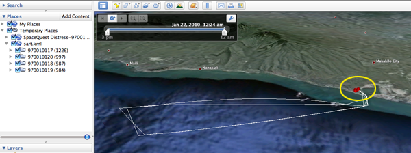
Zooming in on the SpaceQuest receives:
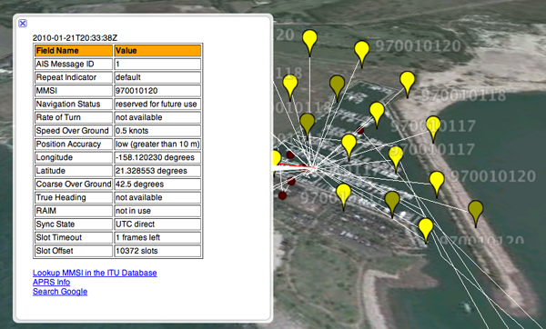
The lesson here is that AIS SARTs can be heard from orbit, but make sure you keep the device on for a while - with an orbital period of 90 minutes, you can't just pulse it on and expect to be heard when you are far from the coast.
There was an announcement from ORBCOMM about AIS SART receives, but they never showed any actual results: Satellite AIS Proves to Be Effective in Maritime Search and Rescue Operations [Marine Safety News]
I am sure there will be some good AIS SART discussions at the San Diego RTCM meeting, but I will not be attending this year. I hope there are some bloggers in attendance this year so I can follow along.
04.28.2010 21:00
Using Apple's TimeMachine to inspect an update
I was curious changes were made in a recent Apple security update. I
realized that I now have an easy way that packaging tripwire for fink
to see what changed: TimeMachine. I backed up my laptop, installed
the update, and did another backup right after the machine came back
up. I then loaded TimeTracker and looked at the differences.
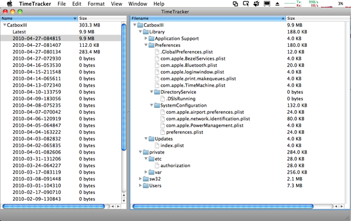
04.27.2010 17:38
Using C++ BitSet to handled signed integers
For AIS, we have to be able to support signed integers from 2 to 32
bits long. These are implemented using the standard Two's
complement notation. I want C++ code that is easy to understand
and reasonably fast. I can be sure that this is a lot slower than it
could be, but I will take the clarity over speed and I am sure that it
is still 50 times faster than my python. I am also pretty sure that I
have byte order issues ahead of me, but I am seeing the same values on
both intel and PPC macs.
Two's complement is easy to extent to higher bit counts without changing doing any hard work: just extend the highest bit out. Positive numbers have a 0 as their highest bit while negative numbers have a 1. For example 10 is is -2. 110 is also -2 as is 11111110. gcc -Os bits.c -std=c99 -c
gcc -Os bits.c -std=c99 -c
The original from gpsd is more like 1148 bytes. Going back into the C/C99/C++ world activates a weird part of my brain... I get crazy about correctness and tweaking things to be just right. When I code python, I have more fun and am much more relaxed.
Two's complement is easy to extent to higher bit counts without changing doing any hard work: just extend the highest bit out. Positive numbers have a 0 as their highest bit while negative numbers have a 1. For example 10 is is -2. 110 is also -2 as is 11111110.
#include <iostream>
#include <bitset>
#include <cassert>
using namespace std;
// Hope this stuff is 32 / 64 bit clean
typedef union {
long long_val;
unsigned long ulong_val;
} long_union;
template<size_t T> int signed_int(bitset<T> bs) {
assert (T <= sizeof(long));
bitset<32> bs32;
if (1 == bs[T-1] ) bs32.flip(); // pad 1's to the left if negative
for (size_t i=0; i < T; i++) bs32[i] = bs[i];
long_union val;
val.ulong_val = bs32.to_ulong();
return val.long_val;
}
int main(int argc, char*argv[]) {
bitset<2> bs2;
int bs_val;
bs2[0] = 0; bs2[1] = 0; bs_val = signed_int(bs2); cout << "2 " << bs2 << ": " << bs_val << endl;
bs2[0] = 1; bs2[1] = 0; bs_val = signed_int(bs2); cout << "2 " << bs2 << ": " << bs_val << endl;
cout << endl;
bs2[0] = 1; bs2[1] = 1; bs_val = signed_int(bs2); cout << "2 " << bs2 << ": " << bs_val << endl;
bs2[0] = 0; bs2[1] = 1; bs_val = signed_int(bs2); cout << "2 " << bs2 << ": " << bs_val << endl;
cout << endl;
bitset<4> bs4;
bs4[3] = 0; bs4[2] = 0; bs4[1] = 0; bs4[0] = 0; bs_val = signed_int(bs4); cout << "4 " << bs4 << ": " << bs_val << endl;
bs4[3] = 0; bs4[2] = 0; bs4[1] = 0; bs4[0] = 1; bs_val = signed_int(bs4); cout << "4 " << bs4 << ": " << bs_val << endl;
bs4[3] = 0; bs4[2] = 1; bs4[1] = 1; bs4[0] = 1; bs_val = signed_int(bs4); cout << "4 " << bs4 << ": " << bs_val << endl;
cout << endl;
bs4[3] = 1; bs4[2] = 1; bs4[1] = 1; bs4[0] = 1; bs_val = signed_int(bs4); cout << "4 " << bs4 << ": " << bs_val << endl;
bs4[3] = 1; bs4[2] = 1; bs4[1] = 1; bs4[0] = 0; bs_val = signed_int(bs4); cout << "4 " << bs4 << ": " << bs_val << endl;
bs4[3] = 1; bs4[2] = 0; bs4[1] = 1; bs4[0] = 0; bs_val = signed_int(bs4); cout << "4 " << bs4 << ": " << bs_val << endl;
bs4[3] = 1; bs4[2] = 0; bs4[1] = 0; bs4[0] = 1; bs_val = signed_int(bs4); cout << "4 " << bs4 << ": " << bs_val << endl;
bs4[3] = 1; bs4[2] = 0; bs4[1] = 0; bs4[0] = 0; bs_val = signed_int(bs4); cout << "4 " << bs4 << ": " << bs_val << endl;
return 0;
}
Here are the results (with a couple other cases thrown in):
2 00: 0 2 01: 1 2 11: -1 2 10: -2 4 0000: 0 4 0001: 1 4 0111: 7 4 1111: -1 4 1110: -2 4 1010: -6 4 1001: -7 4 1000: -8 16 0000000000000000: 0 16 1111111111111111: -1 16 1111111111111110: -2 24 000000000000000000000000: 0 24 111111111111111111111111: -1 24 111111111111111111111110: -2 24 111111111111111011111110: -258To give you a sense of what a much faster implementation looks like, check out what is in GPSD (truncated by me):
for (cp = data; cp < data + strlen((char *)data); cp++) {
ch = *cp;
ch -= 48;
if (ch >= 40) ch -= 8;
for (i = 5; i >= 0; i--)
if ((ch >> i) & 0x01) ais_context->bits[ais_context->bitlen / 8] |= (1 << (7 - ais_context->bitlen % 8));
ais_context->bitlen++;
}
}
// ...
#define BITS_PER_BYTE 8
#define UBITS(s, l) ubits((char *)ais_context->bits, s, l)
#define SBITS(s, l) sbits((char *)ais_context->bits, s, l)
#define UCHARS(s, to) from_sixbit((char *)ais_context->bits, s, sizeof(to), to)
ais->type = UBITS(0, 6);
ais->repeat = UBITS(6, 2);
ais->mmsi = UBITS(8, 30);
switch (ais->type) {
case 1: /* Position Report */
case 2:
case 3:
ais->type1.status = UBITS(38, 4);
ais->type1.turn = SBITS(42, 8);
ais->type1.speed = UBITS(50, 10);
ais->type1.accuracy = (bool)UBITS(60, 1);
ais->type1.lon = SBITS(61, 28);
ais->type1.lat = SBITS(89, 27);
ais->type1.course = UBITS(116, 12);
ais->type1.heading = UBITS(128, 9);
ais->type1.second = UBITS(137, 6);
ais->type1.maneuver = UBITS(143, 2);
ais->type1.raim = UBITS(148, 1)!=0;
ais->type1.radio = UBITS(149, 20);
break;
// ...
Where bits.c from gpsd looks like this after I stripped it down and
made it more C99-ish (appologies to ESR gcc -Os bits.c -std=c99 -c
#define BITS_PER_BYTE 8
unsigned long long ubits(char buf[], const unsigned int start, const unsigned int width)
{
unsigned long long fld = 0;
for (int i = start / BITS_PER_BYTE; i < (start + width + BITS_PER_BYTE - 1) / BITS_PER_BYTE; i++) {
fld <<= BITS_PER_BYTE;
fld |= (unsigned char)buf[i];
}
unsigned end = (start + width) % BITS_PER_BYTE;
if (end != 0) fld >>= (BITS_PER_BYTE - end);
fld &= ~(-1LL << width);
return fld;
}
signed long long sbits(char buf[], const unsigned int start, const unsigned int width)
{
unsigned long long fld = ubits(buf, start, width);
if (fld & (1 << (width - 1))) fld |= (-1LL << (width - 1));
return (signed long long)fld;
}
Where the result looks like this:
nm bits.o 00000000000000a0 s EH_frame1 0000000000000060 T _sbits 00000000000000e8 S _sbits.eh 0000000000000000 T _ubits 00000000000000b8 S _ubits.eh ls -l bits.c -rw-r--r-- 1 schwehr staff 712 Apr 27 20:37 bits.cThis still would be better as inlines with aggressive optimizations turned on.
The original from gpsd is more like 1148 bytes. Going back into the C/C99/C++ world activates a weird part of my brain... I get crazy about correctness and tweaking things to be just right. When I code python, I have more fun and am much more relaxed.
04.27.2010 08:59
updating PostGIS
I should have followed my own advice last week... think before you
update (and backup your database first)!!! I've been working to hand off some ERMA tasks to the new team
and in the process, I'm walking them through updating fink. Without
people to support the system, I had pretty much left well alone on
server for way more than 1 year. That meant that it was using python
2.5 and an older version of PostGIS. Here you can see the history of
postgis on the machine as I have yet to run fink cleanup to remove
the old debs.
I'll leave it to another time to try to restore the other non-essential databases on that server.
locate postgis | grep debs | grep -v java /sw/fink/debs/postgis82_1.3.2-2_darwin-i386.deb /sw/fink/debs/postgis83_1.3.3-2_darwin-i386.deb /sw/fink/debs/postgis83_1.5.1-2_darwin-i386.deb cd /sw/fink/10.5/local/main/binary-darwin-i386/database && ls -l postgis83_1.3.3-2_darwin-i386.deb -rw-r--r-- 1 root admin 495640 Aug 26 2008 postgis83_1.3.3-2_darwin-i386.debAfter doing the update, the world blew up on me:
psql ais
SELECT ST_astext('POINT EMPTY'); -- dummy NOOP to test PostGIS
ERROR: could not access file "/sw/lib/postgresql-8.3/liblwgeom.1.3.so": No such file or directory
dpkg -L postgis83 | grep lib
/sw/lib/postgresql-8.3/postgis-1.5.so
Whoops! The library name has changed. At this point, I attempted to
upgrade postgis in the ais database by 3 three upgrade scripts and the
postgis.sql script. That was going to be a serious pain. The
upgrades did not work and I had to remove the type definition from
postgis.sql and that seemed risky. Thankfully, the ais database is
not precious at the moment, so I did a dropdb ais to blast it
into the ether. I fixed up my ais-db script to handle the latest
postgis needs and rebuilt the database like this:
ais-db -v -d foo --create-database --add-postgis --create-tables --create-track-lines --create-last-positionAs I have not deleted the old deb, I am thinking through my options to recover my other postgis databases on the server. It wouldn't be the end of the world if these could not come back, but it would be a shame. I think I can do a dump of the old debian and put the necessary shared libs back in place by hand and then do a backup. If not, I might be able to uninstall postgis from the databases and then reinstall it.
file *.deb postgis83_1.3.3-2_darwin-i386.deb: Debian binary package (format 2.0) mkdir foo && cd foo dpkg --extract ../postgis83_1.3.3-2_darwin-i386.deb . du sw 164 sw/bin 476 sw/lib/postgresql-8.3 476 sw/lib 3344 sw/share/doc/postgis83 3344 sw/share/doc 3344 sw/share 3984 swI probably also need these:
ls -1 /sw/fink/debs/libgeos*3.0* /sw/fink/debs/libgeos3-shlibs_3.0.0-2_darwin-i386.deb /sw/fink/debs/libgeos3_3.0.0-2_darwin-i386.deb /sw/fink/debs/libgeosc1-shlibs_3.0.0-2_darwin-i386.deb /sw/fink/debs/libgeosc1_3.0.0-2_darwin-i386.debThere is also a more interesting trick with deb files. It turns out that debs are ar archives (people still use these???). This lets you really see what is in the deb:
ar x ../libgeosc1-shlibs_3.0.0-2_darwin-i386.deb ls -l total 32 -rw-r--r-- 1 schwehr staff 1313 Apr 27 09:21 control.tar.gz -rw-r--r-- 1 schwehr staff 20706 Apr 27 09:21 data.tar.gz -rw-r--r-- 1 schwehr staff 4 Apr 27 09:21 debian-binary tar tf data.tar.gz ./ ./sw/ ./sw/lib/ ./sw/lib/libgeos_c.1.4.1.dylib tar tf control.tar.gz ./ ./control ./package.info ./shlibsHandy when trying to see how things were put together. Strikes me as funny that there are tars embedded in an ar archive. Why not just use tar throughout? Congrats to file for looking closer at the ar archive to see that it's really a debian package.
I'll leave it to another time to try to restore the other non-essential databases on that server.
04.23.2010 12:41
Another example of what a GPS receiver can do
I haven't looked at the details of this vessel, but when parked at the
doc under the Tobin bridge, the GPS feeding its class A AIS position
reports had some really bad position estimates. Outside of that, it
looks to have done a great job. The AIS unit should have broadcast that it did not have a GPS lock in these cases.
I now have ais_decimate_traffic working. It defaults to 200 meters between reports or 10 minutes, which ever comes sooner.
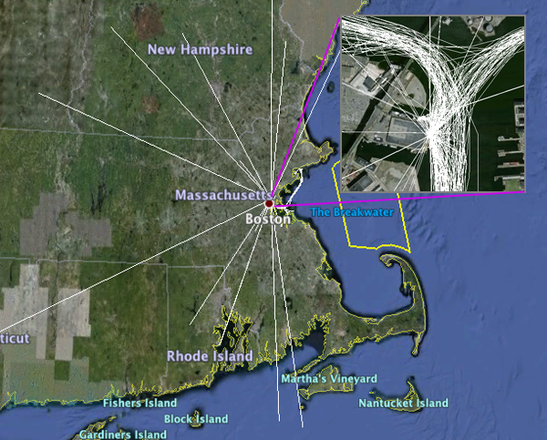
I now have ais_decimate_traffic working. It defaults to 200 meters between reports or 10 minutes, which ever comes sooner.
ais_decimate_traffic.py -f 2009-filtered.db3 -x -71.155 -X -69.36 -y 41.69 -Y 42.795 keep_cnt: 275997 toss_cnt: 897231 outside_cnt: 51287The above image is not filtered, but you can see below that filtering keeps the general sense of when and when the ship was but with about and order of magnitude fewer points.
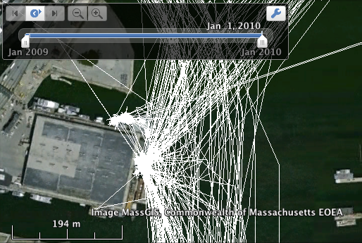
04.22.2010 22:21
Summer internship at NASA Ames - Digital Lunar Mapping
If you are looking for a fun place to work and interested in really
digging into some good challenges, check out this internship. I have
worked with and in this group for the last 14 years and have to say
that it is an amazing place. Email Terry directly if you are
interested.
SUMMER 2010 UNDERGRADUATE INTERNSHIP (NEW!)
NASA Ames Intelligent Robotics Group
http://irg.arc.nasa.gov
DIGITAL LUNAR MAPPING
Want to help NASA map the Moon? Interested in building high-resolution
digital terrain models (DTM)? The NASA Ames Intelligent Robotics Group
is looking for a summer intern student to help create highly accurate
maps of the lunar surface using computer vision and high-performance
computing. The goal of this work is to provide scientists and NASA
mission architects with better information to study the Moon and plan
future missions.
This internship involves developing methods to compare large-scale
DTMs of the Moon. The work requires some familiarity with the
iterative closest point algorithm (ICP), optimization algorithms such
as gradient descent, and 3D computer vision.
The applicant must be an upper-level undergraduate (junior or senior)
or graduate student in Computer Science, Electrical Engineering or
Mathematics. A solid background in optimization algorithms, strong C++
skills and experience with KD trees is preferred. Experience working
with the NASA Planetary Data System (PDS) is a plus.
Start date: any time
Duration: 3 months, with option to extend into Fall 2010.
TO APPLY
========
US Citizenship is REQUIRED for these internships.
Please send a detailed resume, description of your software experience
& projects, and a short letter describing your research interests to:
terry.fong@nasa.gov
INTELLIGENT ROBOTICS GROUP (IRG)
================================
Since 1989, IRG has been exploring extreme environments, remote locations,
and uncharted worlds. IRG conducts applied research in a wide range of
areas including field mobile robots, applied computer vision, geospatial
data systems, high-performance 3D visualization, and robot software
architecture. NASA Ames is located in the heart of Silicon Valley
and is a world leader in information technology and space exploration.
IRG was formerly known as the Intelligent Mechanisms Group (IMG).
04.22.2010 14:44
Response to Mark Moerman about free software
Warning, I just blasted out this opinion piece since I really need to
be processing data right now rather than this, but it needs at least
some response.
In the May 2010 Digital Ship, Mark Moerman has an opinion piece entitled "How insecure are you?". The article kicks off with this quote:
When it comes to the software and IT that you choose, you need to consider the life cycle of your company. I have been caught too many times by commercial closed software. Just because you yourself don't program yourself does not mean you should blow off open tools. If your company depends on something, do you have the ability to hire someone of your choosing to fix it? If you want to support a tool beyond when the author decides to move on, retires, passes away, or gets bought out bought out by a company that intentionally drops the product? Sometimes the closed solution is the way to go... it has the functionality you can get no other way or the support from the company is stellar. But think about Linux verses Windows. Say you standardize on XP for your company. Now you are facing Microsoft that is pushing hard to get you to Windows 7. If Microsoft totally drops patches for XP and you can't switch, what are you to do? If you had standardized a Linux distribution at the same time that XP came out and still wanted to stay with that distribution and kernel but with the updates that you need that do not break your organization, you can hire someone, put out for bid, etc to get help maintaining that system. There are still people out there on Windows 3.x. I feel for them. With all that, you still find me using Apple computers for my laptop and desktop and I still use Fledermaus (a closed software product) for lots of my visualizations.
And if you care about data-theft and security, why-o-why, are you using closed tools? Demand open systems and pay to get them audited.
Why are we letting windows systems that we have no way of auditing control LNG vessels? I think it is completely nuts to trust these closed systems.
My main message: Think carefully before you choose software and spend your staffs' valuable time on training.
In the May 2010 Digital Ship, Mark Moerman has an opinion piece entitled "How insecure are you?". The article kicks off with this quote:
Small shipbrokers and newcomers to the market could be leaving themselves open to all manner of security risks in their rush to adopt 'free' software and other shortcuts to the IT infrastructure they need, writes Mark Moerman, SDSDand he writes:
... there's no such thing as free, business-quality software or IT services, whether for e-mail or anything else. There will always be hidden costs - such as features that need unlocking - and an overall lack of support.I think his article is both good and really misleading at the same time. He is right that cloud computing has risks, but I think he is also implying that open source software that you do not directly pay is too risky. I have to argue that because some thing is open/closed and free/pay does not mean in any way that it is right for your needs. You have to look at the needs of your organization. In my world, sometimes pay services win out and other times I go with the open source or free world. If for example, going to a closed email system makes you think you are more secure, you are very much mistaken. If you wanted trusted email communication, you need to be using cryptographic signatures (e.g. gnupg). If you want your emails to be private, you must encrypt them. If you don't do those things, it really does not matter about your software or service provider choices.
When it comes to the software and IT that you choose, you need to consider the life cycle of your company. I have been caught too many times by commercial closed software. Just because you yourself don't program yourself does not mean you should blow off open tools. If your company depends on something, do you have the ability to hire someone of your choosing to fix it? If you want to support a tool beyond when the author decides to move on, retires, passes away, or gets bought out bought out by a company that intentionally drops the product? Sometimes the closed solution is the way to go... it has the functionality you can get no other way or the support from the company is stellar. But think about Linux verses Windows. Say you standardize on XP for your company. Now you are facing Microsoft that is pushing hard to get you to Windows 7. If Microsoft totally drops patches for XP and you can't switch, what are you to do? If you had standardized a Linux distribution at the same time that XP came out and still wanted to stay with that distribution and kernel but with the updates that you need that do not break your organization, you can hire someone, put out for bid, etc to get help maintaining that system. There are still people out there on Windows 3.x. I feel for them. With all that, you still find me using Apple computers for my laptop and desktop and I still use Fledermaus (a closed software product) for lots of my visualizations.
And if you care about data-theft and security, why-o-why, are you using closed tools? Demand open systems and pay to get them audited.
Why are we letting windows systems that we have no way of auditing control LNG vessels? I think it is completely nuts to trust these closed systems.
My main message: Think carefully before you choose software and spend your staffs' valuable time on training.
04.21.2010 17:32
FOSS disaster management software
Check out Jon
'maddog' Hall's Picks for Today's Six Best OSS Projects. I just
met John a couple of weeks again when a group of us gave a group
presentation at UNH Manchester (Open
Access, Open Content in Education - PPT).
The talks were long so there wasn't any real room for discussions, but
still it was great to meet the other panel members (and visit UNHM for
the first time).
In Jon's picks, he mentioned Open Street Map (OSM), which is great. I championed OSM for ERMA a while back and it now has OSM as an optional background. Nothing like being unable to mark a bridge out during a disaster or adding emergency roads where the Google team is just not allowed. But better yet, he mentioned Sahana, which is open software for distaster management. It's PHP and MySQL. I will have to check it out! Looks like it has been around quite a while, but of course the open source consultants that I've been working with (hi Aaron) already know about the project and know some of those involved.
In Jon's picks, he mentioned Open Street Map (OSM), which is great. I championed OSM for ERMA a while back and it now has OSM as an optional background. Nothing like being unable to mark a bridge out during a disaster or adding emergency roads where the Google team is just not allowed. But better yet, he mentioned Sahana, which is open software for distaster management. It's PHP and MySQL. I will have to check it out! Looks like it has been around quite a while, but of course the open source consultants that I've been working with (hi Aaron) already know about the project and know some of those involved.
04.21.2010 10:48
IHR paper on AIS Met Hydro
Lee and I have a paper out in the reborn online International
Hydrographic Review (IHR) journal. I am excited to have it be an
online journal where we do not have to worry about the costs of
printing.
New Standards for Providing Meteorological and Hydrographic Information via AIS Application-Specific Messages (PDF)
As always, my papers can be downloaded from: http://vislab-ccom.unh.edu/~schwehr/papers/
New Standards for Providing Meteorological and Hydrographic Information via AIS Application-Specific Messages (PDF)
Abstract AIS Application-specific messages transmitted in binary format will be increasingly used to digitally communicate maritime safety/security information between participating vessels and shore stations. This includes time-sensitive meteorological and hydrographic information that is critical for safe vessel transits and efficient ports/waterways management. IMO recently completed a new Safety-of-Navigation Circular (SN/Circ.) that includes a number of meteorologi- cal and hydrographic message applications and data parameters. In conjunction with the development of a new SN/Circ., IMO will establish an International Application (IA) Register for AIS Application-Specific Messages. IALA plans to establish a similar register for regional appli- cations. While there are no specific standards for the presentation/display of AIS application- specific messages on shipborne or shore-based systems, IMO issued guidance that includes specific mention of conforming to the e-Navigation concept of operation. For both IHO S-57 and S-100-related data dealing with dynamic met/hydro information, it is recommended that IHO uses the same data content fields and parameters that are defined in the new IMO SN/Circ. on AIS Application-specific Messages.Also, Lee just recently presented this paper: Alexander, Schwehr, Zetterberg, Establishing an IALA AIS Binary Message Register: Recommended Process, 17th IALA CONFERENCE. (PDF)
As always, my papers can be downloaded from: http://vislab-ccom.unh.edu/~schwehr/papers/
04.20.2010 16:55
Decoding AIS using C++ bitset
I have reached the point where I have to give up my pure python AIS
library for some of the processing that I am doing. When you have 1TB
of AIS AIVDM NMEA to grind through python using BitVector is just not
going to cut it. This would be the 4th generation of AIS systems at
CCOM.
Matt started off in ~2004 with some really fast code using a whole bunch of macros and bit shifts. Great stuff, but hard to follow.
I thought about ESR's code in GPSD. It looks fast, but I'd like to structure things a bit differently. I would really like to use a bit representation to make adding new types as easy as possible. And I am planning to make a nice C++ interface rather than just C.
I have been looking at a number of C++ libraries. The first was vector<bool>, but it looks like it is not up to the task. It is the odd child of vector and behaves differently than the other vector templates.
Boost's dynamic_bitset and BitMagic look attractive, but both add the requirement to add a dependency that I don't always want to have. Perhaps, I will come back to using one of these two.
For now, I have settled on the C++ standard bitset. It covers the basics and is pretty easy to understand. It does have one major problem - you have to know ahead of time how big your bitset will be. For some applications, this feature of bitset will be a show stopper, but for AIS, we know that messages must be <= 168+4*256 bits long when they come back over NMEA from the modem. I can then make one large bitset to hold them all.
My first program filters 1 sentence NMEA AIS messages based on the MMSI. I use this if I have a list of ships that I am reporting on. Here is the code:
The first thing that I do is build a lookup table of bitset<6> blocks where I can convert each nmea character into 6 bits. build_nmea_lookup fills an array with the bitsets, but as you can see in 43-46, the sense of the bits is opposite of the way that I was thinking when writing this code. A future version should remove the bit reordering that happens at lines 43-45 and line 30.
Lines 67-71 create a set of MMSI numbers to keep. I am trying to use the STL containers as much as possible.
Then in lines 76-85, I loop through each line. On line 79, I am splitting the NMEA on commas so that I can get the binary payload out of the 6th block. After working in python, it feels is so strange that C++ does not come with a split. I got my split functions from StackOverflow: C++: How to split a string? On line 81, I convert the ASCII NMEA payload to a bitset using aivdm_to_bits. This really just boils down to copying bits from the lookup table nmea_ord into the bitset (bs).
Line 82 gets down to the real work of interpretting the bits. decode_mmsi copies the bits out of the messages bs and into a local bits working set. Then to_ulong brings the data back to a C++ unsigned long variable. Pretty easy!
I then check to see if the mmsi is in mmsi_set (line 83). The syntax with find is pretty awkward, having to check against mmsi_set.end().
I did some quick bench marking on this code. Compiled without optimization, it took 15.3s on 526K lines of position messages or 34K lines per second. Turning on optimization ("-O3 -funroll-loops -fexpensive-optimizations"), the program took 1/3 the time to complete the filtering. A typical run was 5.5 seconds for 95K lines/sec. The python version of the code takes 5 minutes and 12s or 1.7K lines/sec. C++ is faster than my python code by a factor of 57. I really like Avi Kak's BitVector library for python, but it is not very fast. I've said it before, a cBitVector would be a great contribution if anyone is looking for a project. The python code even got an optimization that the C++ code did not... I only decode the first 7 NMEA payload characters as that is all I need to get to bit 38.
I am still going to use the python code for my research, but having a reasonable flexible C++ library that is 57 times faster, will be a great help. I could probably even make my code faster and parallized it to get more out of my dual and quad core machines.
Matt started off in ~2004 with some really fast code using a whole bunch of macros and bit shifts. Great stuff, but hard to follow.
I thought about ESR's code in GPSD. It looks fast, but I'd like to structure things a bit differently. I would really like to use a bit representation to make adding new types as easy as possible. And I am planning to make a nice C++ interface rather than just C.
I have been looking at a number of C++ libraries. The first was vector<bool>, but it looks like it is not up to the task. It is the odd child of vector and behaves differently than the other vector templates.
Boost's dynamic_bitset and BitMagic look attractive, but both add the requirement to add a dependency that I don't always want to have. Perhaps, I will come back to using one of these two.
For now, I have settled on the C++ standard bitset. It covers the basics and is pretty easy to understand. It does have one major problem - you have to know ahead of time how big your bitset will be. For some applications, this feature of bitset will be a show stopper, but for AIS, we know that messages must be <= 168+4*256 bits long when they come back over NMEA from the modem. I can then make one large bitset to hold them all.
My first program filters 1 sentence NMEA AIS messages based on the MMSI. I use this if I have a list of ships that I am reporting on. Here is the code:
01: #include <bitset>
02:
03: #include <fstream>
04: #include <iostream>
05: #include <string>
06: #include <sstream>
07: #include <vector>
08: #include <set>
09:
10: using namespace std;
11: const size_t max_bits = 168;
12:
13: vector<string> &split(const string &s, char delim, vector<string> &elems) {
14: stringstream ss(s);
15: string item;
16: while(getline(ss, item, delim)) {
17: elems.push_back(item);
18: }
19: return elems;
20: }
21:
22: vector<string> split(const string &s, char delim) {
23: vector<string> elems;
24: return split(s, delim, elems);
25: }
26:
27: int decode_mmsi(bitset<max_bits> &msg_bits) {
28: bitset<30> bits;
29: for (size_t i=0; i < 30; i++)
30: bits[i] = msg_bits[8 + 29-i];
31: return bits.to_ulong();
32: }
33:
34: bitset<6> nmea_ord[128]; // Direct lookup by the character ord number (ascii)
35:
36: void build_nmea_lookup() {
37: for (int c=0; c < 128; c++) {
38: int val = c - 48;
39: if (val>=40) val-= 8;
40: if (val < 0) continue;
41: bitset<6> bits(val);
42: bool tmp;
43: tmp = bits[5]; bits[5] = bits[0]; bits[0] = tmp;
44: tmp = bits[4]; bits[4] = bits[1]; bits[1] = tmp;
45: tmp = bits[3]; bits[3] = bits[2]; bits[2] = tmp;
46: nmea_ord[c] = bits;
47: }
48: }
49:
50: void splice_bits(bitset<max_bits> &dest, bitset<6> src, size_t start) {
51: for (size_t i=0; i<6; i++) { dest[i+start] = src[i]; }
52: }
53:
54: void aivdm_to_bits(bitset<max_bits> &bits, const string &nmea_payload) {
55: for (size_t i=0; i < nmea_payload.length(); i++)
56: splice_bits(bits, nmea_ord[int(nmea_payload[i])], i*6);
57: }
58:
59: int main(size_t argc, char *argv[]) {
60: build_nmea_lookup();
61: ifstream infile(argv[1]);
62: if (! infile.is_open() ) {
63: cerr << "Unable to open file: " << argv[1] << endl;
64: exit(1);
65: }
66:
67: set<int> mmsi_set;
68: for (size_t i=2; i < argc; i++) {
69: const int mmsi = atoi(argv[i]);
70: mmsi_set.insert(mmsi);
71: }
72:
73: bitset<max_bits> bs;
74: int i;
75: string line;
76: while (!infile.eof()) {
77: i++;
78: getline(infile,line);
79: vector<string> fields = split(line,',');
80: if (fields.size() < 7) continue;
81: aivdm_to_bits(bs, fields[5]);
82: const int mmsi = decode_mmsi(bs);
83: if (mmsi_set.find(mmsi) == mmsi_set.end()) continue;
84: cout << line << "\n";
85: }
86:
87: return 0;
88: }
A quick walk through of the code...
The first thing that I do is build a lookup table of bitset<6> blocks where I can convert each nmea character into 6 bits. build_nmea_lookup fills an array with the bitsets, but as you can see in 43-46, the sense of the bits is opposite of the way that I was thinking when writing this code. A future version should remove the bit reordering that happens at lines 43-45 and line 30.
Lines 67-71 create a set of MMSI numbers to keep. I am trying to use the STL containers as much as possible.
Then in lines 76-85, I loop through each line. On line 79, I am splitting the NMEA on commas so that I can get the binary payload out of the 6th block. After working in python, it feels is so strange that C++ does not come with a split. I got my split functions from StackOverflow: C++: How to split a string? On line 81, I convert the ASCII NMEA payload to a bitset using aivdm_to_bits. This really just boils down to copying bits from the lookup table nmea_ord into the bitset (bs).
Line 82 gets down to the real work of interpretting the bits. decode_mmsi copies the bits out of the messages bs and into a local bits working set. Then to_ulong brings the data back to a C++ unsigned long variable. Pretty easy!
I then check to see if the mmsi is in mmsi_set (line 83). The syntax with find is pretty awkward, having to check against mmsi_set.end().
I did some quick bench marking on this code. Compiled without optimization, it took 15.3s on 526K lines of position messages or 34K lines per second. Turning on optimization ("-O3 -funroll-loops -fexpensive-optimizations"), the program took 1/3 the time to complete the filtering. A typical run was 5.5 seconds for 95K lines/sec. The python version of the code takes 5 minutes and 12s or 1.7K lines/sec. C++ is faster than my python code by a factor of 57. I really like Avi Kak's BitVector library for python, but it is not very fast. I've said it before, a cBitVector would be a great contribution if anyone is looking for a project. The python code even got an optimization that the C++ code did not... I only decode the first 7 NMEA payload characters as that is all I need to get to bit 38.
#!/usr/bin/env python
mmsi_set = set((205445000,
# ...
367381230))
import ais
import sys
for line_num,
line in enumerate(file(sys.argv[1])):
if line_num % 10000 == 0: sys.stderr.write('%d\n' % (line_num,))
bv = ais.binary.ais6tobitvec(line.split(',')[5][:7])
mmsi = int(bv[8:38])
if mmsi in mmsi_set:
print line,
Things to do... I haven't tried my PPC machine to see if this blows up
with endian issues. I also need to decode signed integers and
embedded AIS strings. Then I need to turn this code into a more C++
like interface. I'd like to have a factory setup where I drop in nmea
sentences and get a queue of decoded messages built up. It would be
especially good if it could handle multi-sentence lines with multiple
receives. I also still need to handle NMEA 4.0 tag block sentences in
addition to the older USCG NMEA format that I have been using all
along. I am also guessing that talking directly to sqlite via the C
interface will be faster than the sqlite3 python module. The decoding of AIS
can probably be sped up another 10-15% by inlining and avoiding the whole
split and vector<string> business. I can just identify the right comma
positions and pull the characters out of the NMEA string without creating
a new vector of strings. But as always, first make it work correctly, then
build a fancier and faster design.
I am still going to use the python code for my research, but having a reasonable flexible C++ library that is 57 times faster, will be a great help. I could probably even make my code faster and parallized it to get more out of my dual and quad core machines.
04.16.2010 07:27
AIS receive distances by day
In an effort to understand the quality of the data that I am receiving
from AIS, I have written a tool to do something similar to a 2D
spectrogram. For each day, I binned the received class A messages
into 5km bins out to 200km. I then write out a PGM. The
vertical in the image is distance from the receiver with the receiver
at the bottom. I used a log(bin_count) to bring out the cells with
fewer counts. I am guessing that Boston is the heavy white bar near
the bottom. The code will be in ais_distance.py in noaadata.
04.15.2010 12:17
NAIS network delay and clock skew
I have been running an experiment for the last week. On a UNH machine
running NTP, I have been logging NAIS and with each line, I log the
local timestamp. This logging is done by my port-server python code
listening to AISUser and calling time.time() when it receives a line
over TCP. I picked the day with the most data, which turned out to be
April 11th.
First, take a look at the Scituate and Cape Ann receive stations. These two stations are running NTP. I am plotting the local (UNH) timestamp for when packet gets logged minus the USCG receive station timestamp. If timing were perfect, positive times would be the network delay for the message to travel from the receive station, though the USCG network, and back through the internet to UNH. The width of the graph would be the jitter in the network path. There is a first clue that this is not totally the case in this plot. There are a few times that dip below zero by a quarter second. Times below zero imply packets that were received in the future. NTP should be good to at least 100ms (probably way better), so this is the hint that I am seeing something wrong.
Next, let's take a look at 4 stations. I've included a basestation from downtown Boston, the Scituate receiver for comparison, Portsmouth, NH, because that is the closest station to one of mine (< 100m antenna to antenna), and Peurto Rico (which might have longer network delays). Only Scituate is running NTP. The rest are running W32Time. Boston looks to be consitantly the worst where it is recording messages 10-20s in the future.
These plots tell me that NTP is really helping keep make the situation. A rough guess is that it is taking an averge of 1.3 seconds for a message to go from the receiver back through the NAIS network and to UNH. The basestation's average delta is -7.4 seconds. Combining the basestation info and the delay time from Scituate, I would guess that that I would expect an average error of 8.7 seconds with a standard deviation of 4.5 seconds. When you consider that the time error is non-monotonic and that the full range of the error can be more than a minute and a half (I have seen up to 480 seconds), it makes time very difficult to deal with. I still worry about time with the stations running NTP because of how the AISSource software uses ZDA's to calculate a clock offset once a minute - java and windows issues can inject noticable time problems.
And for completeness, here is the code to make the plot with two sample log lines.
First, take a look at the Scituate and Cape Ann receive stations. These two stations are running NTP. I am plotting the local (UNH) timestamp for when packet gets logged minus the USCG receive station timestamp. If timing were perfect, positive times would be the network delay for the message to travel from the receive station, though the USCG network, and back through the internet to UNH. The width of the graph would be the jitter in the network path. There is a first clue that this is not totally the case in this plot. There are a few times that dip below zero by a quarter second. Times below zero imply packets that were received in the future. NTP should be good to at least 100ms (probably way better), so this is the hint that I am seeing something wrong.
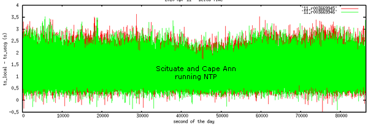
Next, let's take a look at 4 stations. I've included a basestation from downtown Boston, the Scituate receiver for comparison, Portsmouth, NH, because that is the closest station to one of mine (< 100m antenna to antenna), and Peurto Rico (which might have longer network delays). Only Scituate is running NTP. The rest are running W32Time. Boston looks to be consitantly the worst where it is recording messages 10-20s in the future.
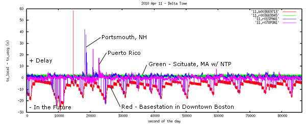
These plots tell me that NTP is really helping keep make the situation. A rough guess is that it is taking an averge of 1.3 seconds for a message to go from the receiver back through the NAIS network and to UNH. The basestation's average delta is -7.4 seconds. Combining the basestation info and the delay time from Scituate, I would guess that that I would expect an average error of 8.7 seconds with a standard deviation of 4.5 seconds. When you consider that the time error is non-monotonic and that the full range of the error can be more than a minute and a half (I have seen up to 480 seconds), it makes time very difficult to deal with. I still worry about time with the stations running NTP because of how the AISSource software uses ZDA's to calculate a clock offset once a minute - java and windows issues can inject noticable time problems.
And for completeness, here is the code to make the plot with two sample log lines.
#!/usr/bin/env python
# 2010-Apr-15
'''
!AIVDM,1,1,,A,15N1BigP00JrmgJH?FduI?vT0H:e,0*6A,b003669713,1270944091,runhgall-znt,1270944079.61
!AIVDM,1,1,,B,15N1doPP00JrmvjH?GdIkwv`0@:u,0*34,b003669713,1270944091,runhgall-znt,1270944079.61
'''
from aisutils.uscg import uscg_ais_nmea_regex
ts_min = None
for line_num,line in enumerate(file('11')):
if 'AIVDM' not in line: continue
ts_local = float(line.split(',')[-1])
if ts_min is None:
ts_min = ts_local
try:
match = uscg_ais_nmea_regex.search(line).groupdict()
except AttributeError:
continue
ts_uscg = float(match['timeStamp'])
print '%.2f %.2f %s' % (ts_local - ts_min, ts_local - ts_uscg, match['station'])
04.14.2010 08:29
Healy's science sensors back in the feed
If anyone is interested in a fun dataset to make visualizations from,
I've put a copy of 20100417-healy-sqlite.db3.bz2.
There are 2756 summary reports in the database from 2009-04-28 through to today (with a big hole for the time in dry dock). I would be really excited if someone would create code to produce a visualization using SIMILE Timeplot.
Hopefully, I will get a chance to convert my code to using spatialite
now that BABA has packaged it for fink!
Google Map View
I actually prefer the Google Maps view...
CREATE TABLE healy_summary ( heading REAL, -- ashtech PAT heading in degrees lon REAL, -- GGA position lat REAL, -- GGA position ts TIMESTAMP, -- ZDA depth REAL, -- CTR depth_m in meters air_temp REAL, -- ME[ABC] Deg C humidity REAL, -- ME[ABC] pressure REAL, -- ME[ABC] barometric pressure_mb (milli bar) precip REAL, -- ME[ABC] milimeters sea_temp REAL, -- STA Deg C speed REAL -- VTG speed knots );The science feed now has speed over ground (SOG), sea & air temps, humidity and pressure coming back : healy-science-google.rss e.g.:
Google Map View
| Field | Value | Units |
|---|---|---|
| UTC time | 2010-04-14 00:30:01 | UTC |
| Longitude | -122.9949 | ° |
| Latitude | 48.1889 | ° |
| Heading | None | ° True |
| Speed over ground | 9.6 | knots |
| Water Depth | None | m |
| Sea temp | 12.59 | ° C |
| Air Temp | 12.11 | ° C |
| Humidity | 70.46 | % |
| Presure | 1011.38 | millibar |
| Precipitation | None | mm |
I actually prefer the Google Maps view...
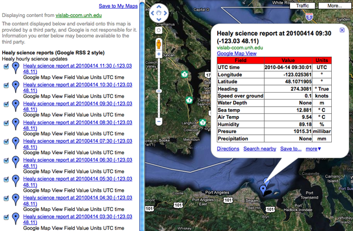
04.13.2010 15:16
python's datetime.datetime and datetime.date
This behavior in python (I only tried 2.6.4) surprised me:
ipython In [1]: import datetime In [2]: d1 = datetime.datetime.utcnow() In [3]: d2 = datetime.date(2010,4,13) In [4]: type d1 ======> type(d1) Out[4]: <type 'datetime.datetime'> In [5]: type d2 ======> type(d2) Out[5]: <type 'datetime.date'> In [6]: isinstance(d1,datetime.datetime) Out[6]: True In [7]: isinstance(d2,datetime.datetime) Out[7]: False In [8]: isinstance(d1,datetime.date) Out[8]: True # Really? A datetime.datetime is an instance of datetime.date? In [9]: isinstance(d2,datetime.date) Out[9]: TrueThere must be some inheritance being implied in there. I don't feel like breaking into this with more powerful python introspection, but I am not up for really exploring this in more detail.
04.13.2010 15:12
Tracking disk space usage over time on the Mac
We just had a Mac where the disk was suddenly full. I never really
figured out what was chewing up all the disk space, but I learned some
really useful Mac specific tricks in the process after spending a
while with du, df, lsof, find, and ls -a, and xargs. With some help
from the fink community (thanks Jack!), I tried out Disk Inventory X. It takes a while
to plow through your disk, but then is super easy to see what's going on
space wise right now.
Then, I had the thought to use Time Machine to watch the differences between the backups. That should definitely record what just started eating up disk space (assuming it wasn't in part of a disk that was marked to not be backed up). TimeTracker (at charlessoft.com does a great job of giving a quick view into what has changed.
I usually prefer command line ways to work. While tms (described here) looks like an awesome command line utility, the software is closed and appears to be dead. However, in the future, it looks like timedog might be really useful. And timedog is open source perl, so it won't just up and disappear.
See also: 10.5: Compare Time Machine backups to original drive System 10.5 [macosxhints] and my question on the forums
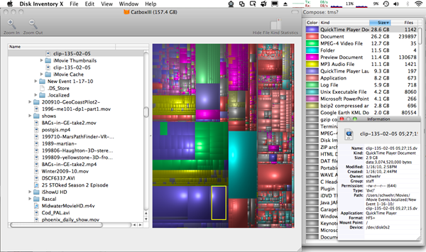
Then, I had the thought to use Time Machine to watch the differences between the backups. That should definitely record what just started eating up disk space (assuming it wasn't in part of a disk that was marked to not be backed up). TimeTracker (at charlessoft.com does a great job of giving a quick view into what has changed.
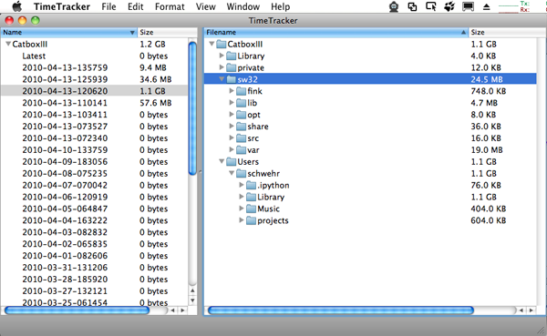
I usually prefer command line ways to work. While tms (described here) looks like an awesome command line utility, the software is closed and appears to be dead. However, in the future, it looks like timedog might be really useful. And timedog is open source perl, so it won't just up and disappear.
See also: 10.5: Compare Time Machine backups to original drive System 10.5 [macosxhints] and my question on the forums
04.13.2010 10:49
Healy in Google Earth Oceans layer (again)
Now that I've fixed my feed code for the Healy, Google has there side
back in action. The Healy is now updating in the Oceans layer of
Google Earth!
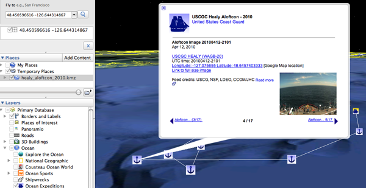
04.12.2010 14:48
Processing large amounts of AIS information
I just got a request Bill Holton for thoughts about how to go about
tackling large amounts of AIS vessel position information using
noaadata. This fits in well with a paper that I am working on right now.
Consider using something other than noaadata. My software is research code and I have some very fast computers that optimize my time rather than the compute power required. Alternatives include (but are not limited to) GPSD, devtools/ais.py in GPSD if you want to stick with pure python, FreeAIS, etc. You can purchase a C library to parse AIS. Or better yet, write your own if you are coder.
If you are sticking with noaadata, first remove all messages that do not matter. You can use egrep 'AIVDM,1,1,,[AB],[1-3]' to extract only the position messages. Then consider running ais_nmea_remove_dups.py with a lookback of something like 5-10K lines (-l 10000). Finally, consider using ais_build_sqlite rather than ais_build_postgis if you don't need PostGIS. sqlite is definitely faster for just crunching raw numbers of lines. Also, make sure that you replace BitVector.py in the ais directory with the latest version as Avi has released 1.5 that is much faster.
If you want to stay with noaadata and are willing to write a little bit of python, you might consider looking in ais_msg_1.py and just converting the minimum number of NMEA characters and just decoding the fields you need.
Remember to be very careful about using raw points from AIS. There are all sorts of aliasing issues that come from transmission rates as ships move differently, aspect oriented transmission errors (e.g. smoke stacks clocking VHF), propagation changes, timestamp errors (or lack of timestamping), ships with bad GPSs, ships with bogus MMSI's, receiving the same message from multiple stations, and so on.
... I have downloaded the noaadata-py tools you have graciously put together and have the code working to import the data into Postgres\Postgis. However, I do have a question regarding the most efficient way to import the data and was hoping you might be able to lead me in the right direction. I need to import the coordinates and ship type from all stations to produce ship counts per grid cell. However, it is taking over 24 hours to import a single day into the database using the ais-process-day.bash script. I have also tried generating a csv file of just the information I need from the rawdata, but it was taking longer than 24 hours to convert a single day of rawdata. This would not be an issue if I was only working with a few days of data, but the project requires analysis on a year's worth of data. Do you have any suggestions for importing the data more effectively?Here are some thoughts on how to get through the data more efficiently and some of the processing issues that come up:
Consider using something other than noaadata. My software is research code and I have some very fast computers that optimize my time rather than the compute power required. Alternatives include (but are not limited to) GPSD, devtools/ais.py in GPSD if you want to stick with pure python, FreeAIS, etc. You can purchase a C library to parse AIS. Or better yet, write your own if you are coder.
If you are sticking with noaadata, first remove all messages that do not matter. You can use egrep 'AIVDM,1,1,,[AB],[1-3]' to extract only the position messages. Then consider running ais_nmea_remove_dups.py with a lookback of something like 5-10K lines (-l 10000). Finally, consider using ais_build_sqlite rather than ais_build_postgis if you don't need PostGIS. sqlite is definitely faster for just crunching raw numbers of lines. Also, make sure that you replace BitVector.py in the ais directory with the latest version as Avi has released 1.5 that is much faster.
If you want to stay with noaadata and are willing to write a little bit of python, you might consider looking in ais_msg_1.py and just converting the minimum number of NMEA characters and just decoding the fields you need.
Remember to be very careful about using raw points from AIS. There are all sorts of aliasing issues that come from transmission rates as ships move differently, aspect oriented transmission errors (e.g. smoke stacks clocking VHF), propagation changes, timestamp errors (or lack of timestamping), ships with bad GPSs, ships with bogus MMSI's, receiving the same message from multiple stations, and so on.
04.12.2010 10:12
nowCOAST WMS feeds now public (and on the iPhone)
The NOAA nowCOAST team has been hard at work and have just been
allowed to make their WMS feeds public! On ERMA, we have been using
these feeds for quite a while and they are fantastic. The details are
on the nowCOAST Map
Services page
Thanks to Jason for this image of Colin Ware's FlowViz (Colin runs the Vis Lab at CCOM) being fed through nowCOAST, exported as WMS, and viewed on the iPhone via WhateverMap. The iPhone specific instructions are here: Connecting to nowCOAST's WMS from an iPhone or iPod Touch
The announcement:
Thanks to Jason for this image of Colin Ware's FlowViz (Colin runs the Vis Lab at CCOM) being fed through nowCOAST, exported as WMS, and viewed on the iPhone via WhateverMap. The iPhone specific instructions are here: Connecting to nowCOAST's WMS from an iPhone or iPod Touch
The announcement:
nowCOAST WMS Announcement March 31, 2010 On March 31st, NOAA/National Ocean Service enabled OpenGIS Web Map Service (WMS) access to the map layers of NOAA's nowCOAST (http://nowcoast.noaa.gov), a GIS-based web mapping portal to surface observations and NOAA forecast products for U.S. coastal areas. A WMS is a standards-based web interface to request geo-registered map images for use by desktop, web, and handheld device clients (e.g. iPod). The nowCOAST WMS is a continuing effort to support NOAA's IT goals to "create composite geospatial data products that span NOAA Line and Program office missions" and "remove the physical barriers to geospatial data access with NOAA". WMS is a recommended web service of NOAA Integrated Ocean Observing System Office's (IOOS)Data Integration Framework. The nowCOAST WMS are separated into six different services, grouped by product or layer type. The six services are observations (obs), analyses, guidance, weather advisories, watches, warnings (wwa), forecasts, and geo-referenced hyperlinks (geolinks). The "obs" service contains near real-time observation layers (e.g. weather radar mosaic; GOES satellite cloud imagery; surface weather/ocean observations). The "analyses" service contains gridded weather and oceanographic analysis layers (e.g. global SST analysis; surface wind analyses). The "guidance" service provides nowcasts from oceanographic forecast modeling systems for estuaries and Great Lakes and coastal ocean operated by NOAA and U.S. Navy. The "wwa" service contains watches, warnings and advisory layers (e.g. tropical cyclone track & cone of uncertainty, short-duration storm-based warnings). The "forecast" service includes gridded surface weather and marine forecast layers (e.g. National Digital Forecast Database's surface wind and significant wave forecasts). The "geolinks" service contains nowCOAST's geo-referenced hyperlinks to web pages posting near-real-time observations and forecast products. These six services can be found at http://nowcoast.noaa.gov/wms/com.esri.wms.Esrimap/name_of_service - where 'name of service' is one of the following: obs, analyses, guidance, wwa, forecasts or geolinks. For example, http://nowcoast.noaa.gov/wms/com.esri.wms.Esrimap/guidance contains forecast guidance from NOS and Navy oceanographic forecast modeling systems. For further information about nowCOAST WMS and how to use it, please see http://nowcoast.noaa.gov/help/mapservices.shtml?name=mapservices nowCOAST integrates near-real-time surface observational, satellite imagery, forecast, and warning products from NOS, NWS, NESDIS, and OAR and provides access to the information via its web-based map viewer and mapping services. nowCOAST was developed and is operated by NOS' Coast Survey Development Laboratory.
04.12.2010 09:31
Home made bacon
Andy and I went over to the butcher's workshop yesterday out in
Pittsfield to pick up the results from two pigs. Monica and I are
trying our hands at home made bacon. We've started with 1/3rd of the
port belly shown here...
04.12.2010 09:11
NTP and DDS
I'm not sure how I missed Dale's blog posts about these two topics and
his links to the Dr.Dobb's articles...
The first, Dale's Linux time keeping points to an article on NTP: Testing and Verifying Time Synchronization - NTP versus TimeKeeper. I see no mention of iburst in the article, which would have likely caused the system to get the systems syncronized much quicker. Would have been nice if he had posted the code he used for the article.
The second is Dale's OMG Real-time Data Distribution Service (DDS). I spent a number of years in the late 90's working on the parent to this standard called Network Data Delivers Service (NDDS) by RTI. Dale points to this Dr.Dobbs article: The Data Distribution Service for Real-Time Systems: Part 1 - DDS is the standard for real-time data distribution. DDS is pretty powerful stuff.
The first, Dale's Linux time keeping points to an article on NTP: Testing and Verifying Time Synchronization - NTP versus TimeKeeper. I see no mention of iburst in the article, which would have likely caused the system to get the systems syncronized much quicker. Would have been nice if he had posted the code he used for the article.
The second is Dale's OMG Real-time Data Distribution Service (DDS). I spent a number of years in the late 90's working on the parent to this standard called Network Data Delivers Service (NDDS) by RTI. Dale points to this Dr.Dobbs article: The Data Distribution Service for Real-Time Systems: Part 1 - DDS is the standard for real-time data distribution. DDS is pretty powerful stuff.
04.12.2010 08:55
Healy back underway
The USCGC ice breaker Healy is back underway. The feed is not yet
back in the Oceans layers of Google Earth, but you can download the updating
kml and watch the Healy getting back into shape after being in the
ship yard. The feeds are online
and you are welcome to check out the healy-py
source code. The science gear isn't online and the images may not
always be updating as the team works on the systems. I just do the
visualizations, it is the LDEO folks who do all the
work.
04.09.2010 13:23
another CCOM blogger!
Jonathan Beaudoin has just joined CCOM and today I found out that in
addition to being a new Mac user, he has a blog!
2bitbrain.blogspot.com
2bitbrain.blogspot.com
04.08.2010 19:32
Station downtime by day for a year
ais_info.py can now create a graph of % down time for a year. This is
based on a 6 minute gap or larger indicating system down time. The command
line options will likely be a bit different when I cleanup the code.
ais_info.py --min-gap=360 2006-r45.log
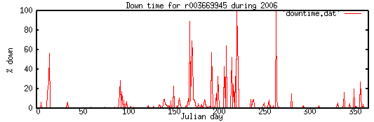
04.08.2010 17:25
simply python generator for date ranges
One thing that is a bit weird with python's datetime module is that it
is hard to interate over a range of days. I would think that this
should be trivial, but I can't find the simple pythonic solution.
However, this does give me a chance to create a "generator" in python
that is much simpler than the ones I've created in the past.
Hopefully everyone can follow this one.
#!/usr/bin/env python
# Python 2.4 or newer
import datetime
def date_generator(start_date, end_date):
cur_date = start_date
dt = datetime.timedelta(days=1)
while cur_date < end_date:
yield cur_date
cur_date += dt
for d in date_generator(datetime.datetime(2006,11,27), datetime.datetime(2006,12,2)):
print d
print 'case 2'
for d in date_generator(datetime.datetime(2006,12,27), datetime.datetime(2007,1,2)):
print d
# Alternative without a generator:
start_date = datetime.date(2006,12,29)
end_date = datetime.date(2007,1,2)
for a_date in [datetime.date.fromordinal(d_ord) for d_ord in range(start_date.toordinal(), end_date.toordinal()) ]:
print a_date
The results of running this wrap nicely over month and year boundaries.
2006-11-27 00:00:00 2006-11-28 00:00:00 2006-11-29 00:00:00 2006-11-30 00:00:00 2006-12-01 00:00:00 case 2 2006-12-27 00:00:00 2006-12-28 00:00:00 2006-12-29 00:00:00 2006-12-30 00:00:00 2006-12-31 00:00:00 2007-01-01 00:00:00 2006-12-29 # This is using datetime.date without a generator 2006-12-30 2006-12-31 2007-01-01For other examples of iterating over date ranges, take a look at: Iterating through a range of dates in Python [stack overflow]
04.08.2010 13:49
Downtime estimate with minimum gap time
Looking at the estimate of downtime, it is primarily controlled by the
amount of time with no messages that I consider as being offline. I am
looking at a threshold somewhere under 10 minutes of no receives. There
should pretty much always be a vessel or basestation up and broadcasting
in the Boston area. I figured the best way to make sure that my 5
minute first guess made sense was to see how the minimum gap time
changed the downtime estimate. As the minimum gap starts increasing,
there are some really huge shifts in the estimated downtime. Here are
the first few values:
I am going with 6 minutes as my threshold for being offline for these NAIS stations. For a receiver in a busy port with proper time control, that a threshold in the range of 21 to 60 seconds. If there is a basestation in the area, ITU 1371-3 says that it should be broadcasting every 10 seconds (Table 2, page 4). If you can consistantly hear that basestation, then 21 seconds should be good to allow for occasionally missing single msg 4 basestation reports.
2 19862872 3 11486556 4 6576780 5 3933032 6 2729717 7 2206115 8 1974632 9 1843744 10 1766929Going from 2 to 8 seconds drops the estimated downtime from 19M seconds down an order of magnitude to 2M seconds. Here is a log plot showing that there are inflection points at 12 seconds and 26-30 seconds. I am not sure what that says about the system, but here are number from times that I think might make sense in terms of timings:
min sec downtime uptime reason 1.5 90 1440037 95.4% Maximum negative time jump seen 3 180 1301964 95.9% Class A/B retransmit when at anchor 5 300 1211944 96.2% Kerberos max time spread for W32Time 6 360 1169338 96.3% Kerb 5 minutes + 1 minute for AISSource time offset 8 480 1117793 96.5% Timing issue seen with Hawkeye basestations 9 540 1082542 96.6% Hawkeye timing issue + 1 minute for AISSource time offsetThat gives me a sense that this station was operational somewhere in the range of 95.4% to 96.6% of the year. With three partially overlapping stations, the hope would be that for the area of the SBNMS, the uptime would be even greater. Accept for major storm events, at least one of the stations would will be up with both Cape Ann and Cape Cod being more prone to go down. However, without good time correlation between the stations, I am not going to bother attempting the analysis of overall uptime. I will just stick to by station statistics.
I am going with 6 minutes as my threshold for being offline for these NAIS stations. For a receiver in a busy port with proper time control, that a threshold in the range of 21 to 60 seconds. If there is a basestation in the area, ITU 1371-3 says that it should be broadcasting every 10 seconds (Table 2, page 4). If you can consistantly hear that basestation, then 21 seconds should be good to allow for occasionally missing single msg 4 basestation reports.
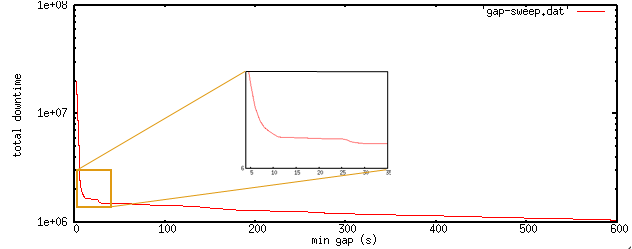
04.08.2010 10:58
Yet more on time with Windows and Java
BRC, AndyM, Jordan, and I have been bouncing some emails back and
forth about timing, and I have a few final notes before I continue on
with my AIS analysis. First some notes about W32time. If I had more
energy on this topic, I would turn on logging for a Windows machine
running W32time and see how it was actually slewing the clock.
Experiences by others in the past have indicated that, "because it's
running SNTP rather than full XNTP (now called just NTP now that NTP is at version 4.x, right?), the corrections can also be far
apart and radical". There is a MSDN blog post on Configuring
the Time Service: Enabling the Debug Log. I could then look at
frequency and size of the time changes. There is also a blog post on
technet, High
Accuracy W32time Requirements, that explains why W32time does not
support high accuracy timing. In that article, I find the source of
the 5 minute jumps:
You can also explore these parameters using regedit:
The question after that is, how well does Windows XP running Meinberg's NTP software (me installing it) do in setting the clock?
Time keeping and updating on a computer can be altered by the quality of the power and power supply unit, operating temperature of the oscillator (is it near RAM, graphics chips, or CPU?), system load (can it service all the interups quickly?), load of the network delivering the time signal (in the case of NTP), and a number of other parameters.
Next comes a discussion of how well the system can tag time. There will be delays in serial transmission, the system UART, task swapping of the process doing the logging, and how well the logging software performs. Up to the actual logging software, we are likely looking at up to 100ms (guestimate) of delay. A nice feature of the ShineMicro receivers is that they can have a feature where they timestamp the message on the receiver. I don't have one myself, so I can't comment on the details, but I have seen the USCG NMEA metadata for them.
The comes the Java runtime issues (similar issues are likely to occur with python). Java is an automatic garbage collecting language (GC), unlike C, where the author of the code has to explicitly allocate and deallocate memory. This means that the Java virtual machine can just up and decide to up and collect garbage. This issue has plagued many systems and NASA spent well over $10M having a realtime LISP system built for the Deep Space 1 probe (DS1) Remote Agent software. There is a paper worth reading that Jordan pointed me to for Java: Validating Java for Safety-Critical Applications by Jean-Marie Dautelle. To quote one of the footnotes:
With the introduction to W32Time, the W32Time.dll was developed for
Windows 2000 and up to support a specification by the Kerberos V5
authentication protocol that require clocks on a network to be
"synchronized". I'll save you from the very long (but interesting)
read on RFC 1510 Kerberos documentation and pull out what is relevant.
RFC 1510: "If the local (server) time and the client time in the
authenticator differ by more than the allowable clock skew (e.g.,
5 minutes), the KRB_AP_ERR_SKEW error is returned."
With that, I want to at least document how to start looking at the settings
on Windows. I don't use Windows very often, so I always have to ask others
how to do this. Thanks to Jordan for the instructions.
Run -> cmd -> <enter>
reg query HKLM\SYSTEM\CurrentControlSet\Services\W32Time\Parameters /s
! REG.EXE VERSION 3.0
HKEY_LOCAL_MACHINE\SYSTEM\CurrentControlSet\Services\W32Time\Parameters
ServiceMain REG_SZ SvchostEntry_W32Time
ServiceDll REG_EXPAND_SZ C:\WINDOWS\system32\w32time.dll
NtpServer REG_SZ time.windows.com,0x1
Type REG_SZ NTP
reg query HKEY_LOCAL_MACHINE\SYSTEM\CurrentControlSet\Services\W32Time\Config
HKEY_LOCAL_MACHINE\SYSTEM\CurrentControlSet\Services\W32Time\Config
LastClockRate REG_DWORD 0x2625a
MinClockRate REG_DWORD 0x260d4
MaxClockRate REG_DWORD 0x263e0
FrequencyCorrectRate REG_DWORD 0x4
PollAdjustFactor REG_DWORD 0x5
LargePhaseOffset REG_DWORD 0x138800
SpikeWatchPeriod REG_DWORD 0x5a
HoldPeriod REG_DWORD 0x5
MaxPollInterval REG_DWORD 0xf
LocalClockDispersion REG_DWORD 0xa
EventLogFlags REG_DWORD 0x2
PhaseCorrectRate REG_DWORD 0x1
MinPollInterval REG_DWORD 0xa
UpdateInterval REG_DWORD 0x57e40
MaxNegPhaseCorrection REG_DWORD 0xd2f0
MaxPosPhaseCorrection REG_DWORD 0xd2f0
AnnounceFlags REG_DWORD 0xa
MaxAllowedPhaseOffset REG_DWORD 0x1
I don't know the units on these and it is extra fun that they are in hex.
The parameters can be interpreted by reading way down this MS technet article:
Windows
Time Service Tools and Settings. Just make sure to scroll down a
ways. (Thanks again Jordan!)
You can also explore these parameters using regedit:
Run -> regedit -> <enter>
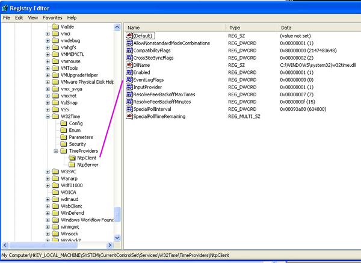
The question after that is, how well does Windows XP running Meinberg's NTP software (me installing it) do in setting the clock?
Time keeping and updating on a computer can be altered by the quality of the power and power supply unit, operating temperature of the oscillator (is it near RAM, graphics chips, or CPU?), system load (can it service all the interups quickly?), load of the network delivering the time signal (in the case of NTP), and a number of other parameters.
Next comes a discussion of how well the system can tag time. There will be delays in serial transmission, the system UART, task swapping of the process doing the logging, and how well the logging software performs. Up to the actual logging software, we are likely looking at up to 100ms (guestimate) of delay. A nice feature of the ShineMicro receivers is that they can have a feature where they timestamp the message on the receiver. I don't have one myself, so I can't comment on the details, but I have seen the USCG NMEA metadata for them.
The comes the Java runtime issues (similar issues are likely to occur with python). Java is an automatic garbage collecting language (GC), unlike C, where the author of the code has to explicitly allocate and deallocate memory. This means that the Java virtual machine can just up and decide to up and collect garbage. This issue has plagued many systems and NASA spent well over $10M having a realtime LISP system built for the Deep Space 1 probe (DS1) Remote Agent software. There is a paper worth reading that Jordan pointed me to for Java: Validating Java for Safety-Critical Applications by Jean-Marie Dautelle. To quote one of the footnotes:
Major GCs occur regularly producing up to 90 ms delays in execution time.The paper shows that timing can be all over the place and that it really needs to be experimentally determined. It matters which JVM is being used, the system priority for the process, the details of how the program creates/deletes objects, if Just-in-Time compilation (JIT) is being used, and if it is Real-Time Java
04.07.2010 21:19
Looking at gaps of time with no messages received for an AIS receiver
I have been looking to create some sort of model of up verses downtime
with AIS data feeds. I am having to base my estimate of downtime on
when I do not have timestamped packets of AIS data. There are a good
number of reasons that I might not have any AIS messages of the VDL
(VHF Data Link):
I have now run a draft of my ais_info.py code on all of the 2006 data for station r003669945 in Scituate, MA. This station should have the highest uptime / lowest downtime of the 3 receivers I am looking at owing to being in the best location for network and power uptime.
Here are some of the results. The system logged from 1136091501 1167627754 (UNIX UTC seconds) for a total of 31536253 seconds (525604 minutes or 8760 hours or 365 days). That means we didn't loose much time at either end of the year. Next, we need to examine the gaps in time between received packets. I start counting when gaps are anything other than 0 or 1 second. The following table shows the center of the gaps around 0:
Just to give you a sense of what we are dealing with, that is 4.8
million gaps of 2 seonds -- 1 second where we did not hear anything
from the radio or did not receive a status message from the system.
The largest negative gap was -90 seconds and the largest positive gap
was 119566 s (33.2 hours). In this graph, I have clipped the x axes
to 20000 seconds and made the y-axis a log scale of count.
The question then becomes, at what time gap do we consider the system down? We have to factor the W32time jumps - see: Calder and McLeod, 2007, "High Precision Absolute Time Synchronization in Distributed Data Capture Systems", IEEE Journal of Oceanic Engineering, 32(4). Then we have the possibility of time between receive messages if there are no ships moving. If there are any Class A vessels in the area, the will transmit every 3 minutes if not moving or more often if moving or turning. Can we assume that there is always a class A in range of this station? I will have to address that with a receiver range check that will come later. For now, I am going to use 10 seconds as the threshold for being offline.
I summed up all positive gaps of 10 seconds or larger for a total of 1766929 s of "downtime" (20.4 days). The negative time jumps sum up to -1998 s or -33.3 minutes.
Based on W32Time issues with only trying to maintain time for kerberos, I am leaning towards 5 minutes or a bit higher to declare a bit of downtime. However, that -90 time jump makes me think that maybe a minute and a half might be a better number.
- No ships were within the normal coverage range of the receiver
- Obstructions between the tranmitters and receiver (smoke stack azimuth issues or equipment parked near the antenna
- Antenna failure (lightning, bio-fowling, etc)
- Propagation conditions were very poor reducing the ability to hear messages.
- RF noise in the area
- Jamming - this really is just RF noise
- Packet collisions between transmitters
- The receiver malfunctioned
- The logging software failed (AISSource)
- The sense of time of AISSource or the Windows logging computer jumped
- The logging computer failed
- The receiver sites power is offline
- The internet link from the receiver site to the USCG was down
- Problems with the USCG network and AIS distrution system
- Network link failure between USCG and the logging site
- Authentication issues with AISUser (aka inode of directory changed)
- Logging software failed
- Logging computer failed
I have now run a draft of my ais_info.py code on all of the 2006 data for station r003669945 in Scituate, MA. This station should have the highest uptime / lowest downtime of the 3 receivers I am looking at owing to being in the best location for network and power uptime.
Here are some of the results. The system logged from 1136091501 1167627754 (UNIX UTC seconds) for a total of 31536253 seconds (525604 minutes or 8760 hours or 365 days). That means we didn't loose much time at either end of the year. Next, we need to examine the gaps in time between received packets. I start counting when gaps are anything other than 0 or 1 second. The following table shows the center of the gaps around 0:
| delta T (s) | Count |
| -8 | 9 |
| -7 | 5 |
| -6 | 13 |
| -5 | 14 |
| -4 | 18 |
| -3 | 42 |
| -2 | 71 |
| -1 | 49 |
| 2 | 4188158 |
| 3 | 1636592 |
| 4 | 660937 |
| 5 | 240663 |
| 6 | 87267 |
| 7 | 33069 |
| 8 | 16361 |
| 9 | 8535 |
| 10 | 8395 |
| 11 | 770 |
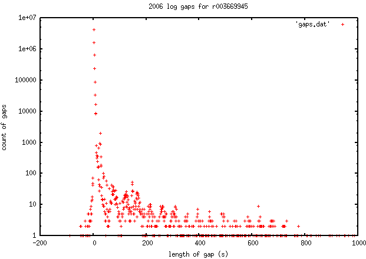
The question then becomes, at what time gap do we consider the system down? We have to factor the W32time jumps - see: Calder and McLeod, 2007, "High Precision Absolute Time Synchronization in Distributed Data Capture Systems", IEEE Journal of Oceanic Engineering, 32(4). Then we have the possibility of time between receive messages if there are no ships moving. If there are any Class A vessels in the area, the will transmit every 3 minutes if not moving or more often if moving or turning. Can we assume that there is always a class A in range of this station? I will have to address that with a receiver range check that will come later. For now, I am going to use 10 seconds as the threshold for being offline.
I summed up all positive gaps of 10 seconds or larger for a total of 1766929 s of "downtime" (20.4 days). The negative time jumps sum up to -1998 s or -33.3 minutes.
Based on W32Time issues with only trying to maintain time for kerberos, I am leaning towards 5 minutes or a bit higher to declare a bit of downtime. However, that -90 time jump makes me think that maybe a minute and a half might be a better number.
04.07.2010 09:45
Creating debs for ubuntu
I just created a debian package (.deb) of ntplib for one of my Ubuntu
boxes. I still do not feel like I understand the process, but it
worked! I started with Creating
a .deb package from a python setup.py. I skipped the signing part
of the process. I thought it had all failed yesterday, but then I
found a deb sitting there one directory up today. Wahoo!
http://vislab-ccom.unh.edu/~schwehr/software/ubuntu/9.04/python-ntplib_0.1.9_all.deb
Another route would have been to try: stdeb:
sudo dpkg -i python-ntplib_0.1.9_all.deb dpkg -L python-ntplib /. /usr /usr/share /usr/share/python-support /usr/share/python-support/python-ntplib /usr/share/python-support/python-ntplib/ntplib-0.1.9.egg-info /usr/share/python-support/python-ntplib/.version /usr/share/python-support/python-ntplib/ntplib.py /usr/share/doc /usr/share/doc/python-ntplib /usr/share/doc/python-ntplib/changelog.gz /usr/share/doc/python-ntplib/README /usr/share/doc/python-ntplib/copyright python Python 2.6.2 (release26-maint, Apr 19 2009, 01:56:41) [GCC 4.3.3] on linux2 Type "help", "copyright", "credits" or "license" for more information. >>> import ntplibIt didn't create the pyc on install, but it works! There needs to be a postinst script, but that is another day.
http://vislab-ccom.unh.edu/~schwehr/software/ubuntu/9.04/python-ntplib_0.1.9_all.deb
Another route would have been to try: stdeb:
stdeb produces Debian source packages from Python packages via a new distutils command, sdist_dsc. Automatic defaults are provided for the Debian package, but many aspects of the resulting package can be customized (see the customizing section, below). An additional command, bdist_deb, creates a Debian binary package, a .deb file.
04.06.2010 09:40
A first pass at evaluating NTP
You can do a lot better than what I did here, but this is enough to
get a sense of what NTP was doing on the N-AIS host logging computer
that is r003669945 that I presented last week. First, let's look at
the log file that I'll be using to see how things are. It's loopstats.20100326:
Here, I've plotted the 5th column, estimated error, over the 54 points
that I have for that day agains the seconds past midnight for the day. It looks like
this computer's time is always under 0.0014 seconds (1.4 ms), which seems pretty good.
But to get a sense of how that compares to another machine, I pulled the logs from my new quad core xeon 3GHz desktop that runs on the CCOM network. This time, I am plotting the days since I got the machine up and running. There were a lot of reboots during the first couple of days, but then it seems to settle down to under 15 ms:
It appeards that my desktop occasionally does as well as the logging computer, but the Mar 26 timing is pretty darn good.
It wouldn't be fair to leave you without the code that I used to create these plots. It's pretty simple:
55281 610.766 0.003964577 -30.829 0.001042694 0.042301 10 55281 1634.929 0.003274964 -30.848 0.001005363 0.040147 10 55281 2659.093 0.003658357 -30.821 0.000950150 0.038725 10 55281 4708.420 0.002458421 -30.846 0.000984844 0.037242 10 55281 6760.748 0.002162450 -30.845 0.000927161 0.034837 10 55281 7785.913 0.002674196 -30.816 0.000885951 0.034184 10 55281 8810.076 0.001050992 -30.863 0.001008040 0.036084 10 ...I got the definitions of the fields in loopstats from here: Monitoring Options by Walt Kelly
| Item | Units | Description |
| 50935 | MJD | date |
| 75440.031 | s | time past midnight |
| 0.000006019 | s | clock offset |
| 13.778 | PPM | frequency offset |
| 0.000351733 | s | RMS jitter |
| 0.013380 | PPM | RMS frequency jitter (aka wander) |
| 6 | log2 s | clock discipline loop time constant |
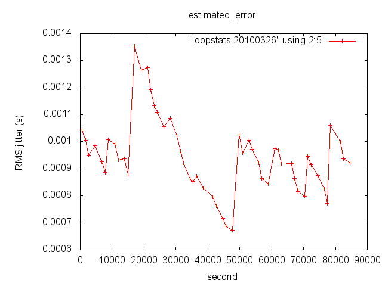
But to get a sense of how that compares to another machine, I pulled the logs from my new quad core xeon 3GHz desktop that runs on the CCOM network. This time, I am plotting the days since I got the machine up and running. There were a lot of reboots during the first couple of days, but then it seems to settle down to under 15 ms:
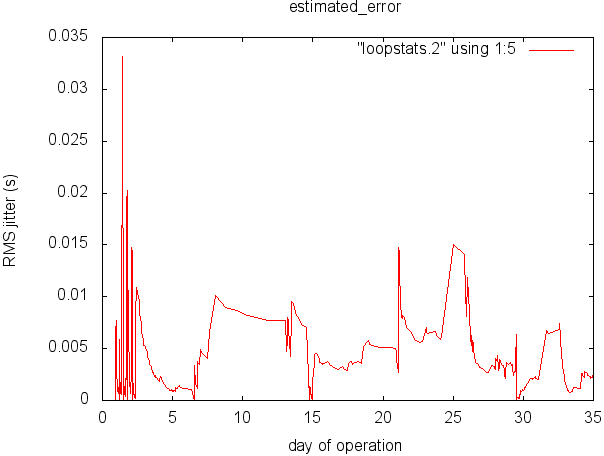
It appeards that my desktop occasionally does as well as the logging computer, but the Mar 26 timing is pretty darn good.
It wouldn't be fair to leave you without the code that I used to create these plots. It's pretty simple:
#!/bin/bash
declare -ar field_names=( "0" day second offset drift_compensation estimated_error stability polling_interval )
declare -ar field_label=( "0" "day (MJD)" "time past midnight (s)" "clock offset (s)" "freq offset (PPM)" "RMS jitter (s)" "RMS freq jitter/wander (PPM)" "clock discipline loop time const (log_2 s)" )
for col in 3 4 5 6 ; do
echo Column $col "..." ${field_names[$col]} "..." ${field_label[$col]}
gnuplot <<EOF
set term png
set output "$col-${field_names[$col]}.png"
set title "${field_names[$col]}"
set xlabel "${field_names[2]}"
set ylabel "${field_label[$col]}"
plot "$1" using 2:$col with lp
EOF
done
The above script builds 4 plots against seconds of the day past
midnight. To plot agains the day, I wrote this little python script
to make the first column be decimal days and changed the above gnuplot
command's using statement to be "using 1:$col".
#!/usr/bin/env python
import sys
baseday = None
for line in file(sys.argv[1]):
day = int(line.split()[0])
if baseday is None:
baseday = day
if baseday > day:
baseday = day
for line in file(sys.argv[1]):
fields = line.split()
day = int(fields[0])
day = (day-baseday) + float(fields[1]) / (24*3600.)
fields[0] = str(day)
print ' '.join(fields)
Not fancy, but it gets the job done. There is a summary_plot.pl
script around on the net, but not being a heavy duty perl user, I am
not up for figuring it out.
04.05.2010 13:29
Time Management in N-AIS
I have been looking more into how time is managed on N-AIS receive
stations. And think I have it worked out. This has big implications
on how NAIS logs can be used. For situational awareness / Maritime
Domain Awareness (MDA), this really does not have any huge implications.
But definitely do not navigate using NAIS feeds.
First off, I do not know the full range of setups for how AIS data is collected. I am sure that there are additional issues for data that comes from places like Alaska that are done through the local marine exchange. This is just based on what I have worked with.
The systems that I have seen are running Windows XP (I use Ubuntu for mine) and do NOT run NTP. That means these systems are using are probably using XP's W32tm.exe [MS TechNet, thanks Jordan!] This is almost SNTP, and definitely not the equivalent to running a full NTP daemon. From Microsoft's web page: http://support.microsoft.com/kb/939322
I am not sure the best solution to this, but an easy way would be to switch these machines over to Linux or OpenBSD, setup NTP as a stratum 1 server using a PPS feed, remove this clock offset business, and log NTP's status.
On three NOAA run NAIS receivers, we installed Meinberg's NTP software earlier this year. I gave a look at what AISMiner outputs for Mar 26 for the same station that I was looking at and I have really strange results. It looks just confusing. Time is all over the place. I think NTP is doing a better job of disciplining the system clock, but there are still is the really strange large jump in time.
First off, I do not know the full range of setups for how AIS data is collected. I am sure that there are additional issues for data that comes from places like Alaska that are done through the local marine exchange. This is just based on what I have worked with.
The systems that I have seen are running Windows XP (I use Ubuntu for mine) and do NOT run NTP. That means these systems are using are probably using XP's W32tm.exe [MS TechNet, thanks Jordan!] This is almost SNTP, and definitely not the equivalent to running a full NTP daemon. From Microsoft's web page: http://support.microsoft.com/kb/939322
We do not guarantee and we do not support the accuracy of the W32Time service between nodes on a network. The W32Time service is not a full-featured NTP solution that meets time-sensitive application needs. The W32Time service is primarily designed to do the following: Make the Kerberos version 5 authentication protocol work. Provide loose sync time for client computers.The W32Time service cannot reliably maintain sync time to the range of 1 to 2 seconds. Such tolerances are outside the design specification of the W32Time service.The java recording software on these machines listens to the AIS serial port and watches for the traditional GPS ZDA timestamp. It keeps an internal offset count between the system clock obtained by calling System.currentTimeMillis(). The code differences the system clock and the ZDA time to calculate this offset that it stores. If the offset is more than 59 seconds old when it receives a ZDA, the system repeats the process of calculating an offset. Here is a quick sample bit of code that shows the system call from java:
class TimeTest {
public static void main(String[] args) {
System.out.println(System.currentTimeMillis());
System.out.println(System.currentTimeMillis()/1000);
}
}
And a sample run (on my Mac)... I am also using the unix date command to
show that the UNIX UTC timestamp is the same.
javac TimeTest.java java TimeTest ; date +%s 1270487642567 1270487642 1270487642I see some trouble in this kind of implementation. What if W32Time disciplines the clock right after the logging software gets an offset? This means that for as much as 59 seconds, the system can be off in time by as far as W32Time jumps. The W32Time control parameters are available in the Windows registry (thanks again to Jordan):
HKEY_LOCAL_MACHINE\SYSTEM\CurrentControlSet\Services\W32Time\Parameters\NtpServer HKEY_LOCAL_MACHINE\SYSTEM\CurrentControlSet\Services\W32Time\Config\MaxPollInterval HKEY_LOCAL_MACHINE\SYSTEM\CurrentControlSet\Services\W32Time\Config\MinPollInterval HKEY_LOCAL_MACHINE\SYSTEM\CurrentControlSet\Services\W32Time\Config\AnnounceFlags HKEY_LOCAL_MACHINE\SYSTEM\CurrentControlSet\Services\W32Time\TimeProviders\NtpClient\Enabled HKEY_LOCAL_MACHINE\SYSTEM\CurrentControlSet\Services\W32Time\TimeProviders\NtpServer\EnabledWe have seen windows boxes jump at least a minute and my data suggest jumps as much 7+ minutes.
I am not sure the best solution to this, but an easy way would be to switch these machines over to Linux or OpenBSD, setup NTP as a stratum 1 server using a PPS feed, remove this clock offset business, and log NTP's status.
On three NOAA run NAIS receivers, we installed Meinberg's NTP software earlier this year. I gave a look at what AISMiner outputs for Mar 26 for the same station that I was looking at and I have really strange results. It looks just confusing. Time is all over the place. I think NTP is doing a better job of disciplining the system clock, but there are still is the really strange large jump in time.
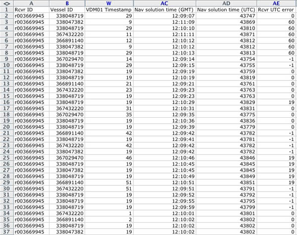
04.04.2010 12:17
A proprietary NMEA sentence for NTP status
UPDATE: Roland pointed out that proprietary messages are supposed to start with a 'P'. I'm updating the code in noaadata to start with a P.
Comments can go here: NMEA NTP status sentence ZNT [blogspot]
I have taken a first stab at a proprietary NMEA sentence to report NTP status. My goal is to drop this into my data loggers that are using time.time() to log the time of data received. That way, the quality of time information will not get separated from the actual data. In a perfect world, all of my data loggers would be using GPS to be stratum 1 time servers.
I am using ntplib to query the NTP server. Here is what running my reference code looks like:
nmea_znt.py
Comments can go here: NMEA NTP status sentence ZNT [blogspot]
I have taken a first stab at a proprietary NMEA sentence to report NTP status. My goal is to drop this into my data loggers that are using time.time() to log the time of data received. That way, the quality of time information will not get separated from the actual data. In a perfect world, all of my data loggers would be using GPS to be stratum 1 time servers.
I am using ntplib to query the NTP server. Here is what running my reference code looks like:
$NTZNT,1270397106.95,127.0.0.1,17.151.16.23,3,1270396808.14,0.000064,-20,0.118225,0.030853*49
ZNT - NMEA Proprietary NTP status report
talker: NT
timestamp: 1270397106.95
host: 127.0.0.1
ref_clock: 17.151.16.23
stratum: 3
last_update: 1270396808.14
offset: 6.4e-05
precision: -20.0
root_delay: 0.118225
root_dispersion: 0.030853
{'root_delay': 0.118225, 'timestamp': 1270397106.95, 'stratum': 3,
'precision': -20.0, 'nmea_type': 'ZNT', 'last_update': 1270396808.1400001,
'ref_clock': '17.151.16.23', 'host': '127.0.0.1', 'talker': 'NT',
'root_dispersion': 0.030852999999999998, 'offset': 6.3999999999999997e-05,
'checksum': '49'}
The code uses a regular expression to parse the sentence and has a little command line interface... "./nmea_znt.py -h" for help.
nmea_znt.py
04.03.2010 17:09
More on the network time protocol (NTP)
See also: Meinberg's NTP
Overview and The NTP FAQ
and HOWTO [UDel EECIS] (the later is helpful, but out of date). Things to read: Network Time Synchronization Research Project
As I was just working more with time, I figured I should dig into NTP more. Val got me kick started a couple of years ago. I need to really know what NTP is doing to make sure I am don't have a lurking time problem. First time commands to see what is happening. All of what I am showing here is on Mac OSX 10.6.3. I was playing with ntp in fink (4.6.2) and a development version of ntp (ntpq 4.2.7p22@1.2125-o Sat Apr 3 20:04:44 UTC 2010 (1) ), but for this post, I will use the stock ntp.
First, I need to describe my ntp setup, as it is different than the default Apple configuration. I am giving NTP a whole bunch of servers to choose from. NTP works best when it has at least 3 servers to pick from. I am using servers from the NTP Pool project. Here are the relevant lines that I added in my /etc/ntp.conf:
Sometimes you hit a stratum 1 server in the ntp pool. There are a number of fields in the refid depending on which time source is being used, but here is one I happend apon:
The sysinfo command to ntpdc is the real meat of monitoring ntp:
As I was just working more with time, I figured I should dig into NTP more. Val got me kick started a couple of years ago. I need to really know what NTP is doing to make sure I am don't have a lurking time problem. First time commands to see what is happening. All of what I am showing here is on Mac OSX 10.6.3. I was playing with ntp in fink (4.6.2) and a development version of ntp (ntpq 4.2.7p22@1.2125-o Sat Apr 3 20:04:44 UTC 2010 (1) ), but for this post, I will use the stock ntp.
First, I need to describe my ntp setup, as it is different than the default Apple configuration. I am giving NTP a whole bunch of servers to choose from. NTP works best when it has at least 3 servers to pick from. I am using servers from the NTP Pool project. Here are the relevant lines that I added in my /etc/ntp.conf:
server time.apple.com
server 0.us.pool.ntp.org minpoll 12 maxpoll 17
server 1.us.pool.ntp.org minpoll 12 maxpoll 17
server 2.us.pool.ntp.org minpoll 12 maxpoll 17
server 3.us.pool.ntp.org minpoll 12 maxpoll 17
server 0.north-america.pool.ntp.org minpoll 12 maxpoll 17
server 1.north-america.pool.ntp.org minpoll 12 maxpoll 17
server 2.north-america.pool.ntp.org minpoll 12 maxpoll 17
# And revert to the local clock (".LOCL." in the ntpq list) if all else fails
server 127.127.1.0
fudge 127.127.1.0 stratum 13
# Include any local servers or official servers here:
server wilmot.unh.edu
I can look to see that ntp is indeed running on my laptop:
ps aux | grep ntp root 51659 0.0 0.0 2435212 1188 ?? Ss 10:52AM 0:01.37 \ /usr/sbin/ntpd -c /private/etc/ntp-restrict.conf -n -g \ -p /var/run/ntpd.pid -f /var/db/ntp.driftTo restart NTP, you can use this command. Once NTP is stopped, MacOSX will automatically restart ntpd.
sudo launchctl stop org.ntp.ntpdntpq has an interactive mode that provides quite a bit of information, but the first thing to do is find out which version of ntpq I am using. There are supposed to be "-v" options to the commands, but non of them worked for me.
echo version | ntpq ntpq 4.2.4p4@1.1520-o Mon May 18 19:38:36 UTC 2009 (1)Now, lets get a listing of the servers that ntpd is listening to right now. It tries to pick the best server and the one it is using is marked with a "*". The "+" denotes the next best server. I added the "-n" flag to not look up the names of the servers. This is faster and the IP addresses do not get clipped.
ntpq -p -n
remote refid st t when poll reach delay offset jitter
==============================================================================
*17.151.16.22 17.254.0.49 2 u 397 1024 377 115.966 -10.589 2.441
74.88.39.232 129.6.15.29 2 u 1945 68m 3 100.529 -29.152 30.756
70.86.250.6 129.7.1.66 2 u 1908 68m 3 321.470 -124.26 127.291
67.222.149.177 66.96.98.9 3 u 1923 68m 3 357.534 -145.33 130.226
38.229.71.1 192.168.0.16 2 u 1948 68m 3 274.057 -110.85 113.097
169.229.70.183 169.229.128.214 3 u 1937 68m 3 415.429 -157.87 157.765
72.9.108.133 67.128.71.65 3 u 1908 68m 3 266.445 -116.93 121.686
169.229.70.64 128.32.206.54 2 u 1954 68m 3 394.899 -155.73 146.651
127.127.1.0 .LOCL. 13 l 12 64 377 0.000 0.000 0.001
+132.177.137.2 204.9.136.253 3 u 236 1024 377 42.310 -3.545 2.498
Remote is the host name that ntp is talking to. refid is the host
that is the "parent" of the remote host. NTP works like a tree
propagating time from host to host. The "st" denotes the stratum or
distance from a true time source (e.g. a GPS, cell phone, or other
radio signal). A computer attached to a time source is stratum
1. "t" is the type of connection that the remote has:
u: unicast or manycast client b: broadcast or multicast client l: local (reference clock) s: symmetric (peer) A: manycast server B: broadcast server M: multicast serverWhen says how long it has been since ntpd has talked to the remote ntp server. Pool is how the time between talking to this remote server. reach is an set of flags that I have not looked into. Delay is the number of milliseconds roundtrip from the remote to the root server (stratum 1) and back. Offset is estimated different in time in milliseconds from that host to the root clock that it is synced to. Jitter is how much time varies in milliseconds between several time queries for that host.
Sometimes you hit a stratum 1 server in the ntp pool. There are a number of fields in the refid depending on which time source is being used, but here is one I happend apon:
remote refid st t when poll reach delay offset jitter ============================================================================== *207.171.30.106 .PPS. 1 u 1283 68m 37 83.255 3.331 0.251If you want to trace up the stratum levels for your computer, you can use ntptrace:
ntptrace localhost: stratum 3, offset -0.005283, synch distance 0.403253 17.151.16.22: timed out, nothing received ***Request timed outHowever, as you can see here, not all hosts respond to the trace requests. To give a view of what a successful trace looks like, I've put in an address for a timeserver:
ntptrace 72.18.205.157 point2.adamantsys.com: stratum 3, offset -0.000391, synch distance 0.053617 mainframe.cynacom.com: stratum 2, offset -0.000652, synch distance 0.020873 time-c.timefreq.bldrdoc.gov: stratum 1, offset 0.000000, synch distance 0.002650, refid 'ACTS'The next command to try is ntpdc - the "special query program". There are two key command to use here to monitor how well NTP is doing. I am still learning how to interpret these values.
The sysinfo command to ntpdc is the real meat of monitoring ntp:
ntpdc -c sysinfo system peer: time6.apple.com system peer mode: client leap indicator: 00 stratum: 3 precision: -20 root distance: 0.11617 s root dispersion: 0.24869 s reference ID: [17.151.16.22] reference time: cf62343e.0039f289 Sat, Apr 3 2010 17:40:14.000 system flags: auth monitor ntp kernel stats jitter: 0.203140 s stability: 0.000 ppm broadcastdelay: 0.003998 s authdelay: 0.000000 sThe loopinfo is also important and has the offset which is the estimate of how far off of the reference clock we are. But note, if you drop back to the local clock, time will be right on, but the local oscillator in your computer is horrible at keeping time.
ntpdc -c loopinfo offset: -0.013710 s frequency: -3.706 ppm poll adjust: 30 watchdog timer: 173 sThat is the basics of looking at ntp with commands. You can also enable logging in the ntp.conf file and plot out values over time. Hopefully, I will talk through doing that another time. For now, I am going to show you how to get some of the above information from within python using ntplib. There is a test_ntplib.py program in the source distribution that shows how to use the library. Here is cut down example:
fink install ntplib-py26
ipython
import ntplib
from time import ctime
client = ntplib.NTPClient()
response = client.request('localhost', version=3)
print('Offset : %f' % response.offset)
print('Stratum : %s (%d)' % (ntplib.stratum_to_text(response.stratum), response.stratum))
print('Precision : %d' % response.precision)
print('Root delay : %f ' % response.root_delay)
print('Root dispersion : %f' % response.root_dispersion)
print('Delay : %f' % response.delay)
print('Poll : %d' % response.poll)
print('Transmit timestamp : ' + ctime(response.tx_time))
print('Reference timestamp : ' + ctime(response.ref_time))
print('Reference clock identifier : ' + ntplib.ref_id_to_text(response.ref_id, response.stratum))
The results look like this:
Offset : 0.000066 Stratum : secondary reference (NTP) (3) Precision : -20 Root delay : 0.116165 Root dispersion : 0.264694 Delay : 0.000264 Poll : 0 Transmit timestamp : Sat Apr 3 18:00:55 2010 Reference timestamp : Sat Apr 3 17:40:14 2010 Reference clock identifier : 17.151.16.22When working with data, I always keep everything in UTC. In python, the easiest way to timestamp data is by calling time.time(), which returns a UNIX UTC timestamp number and datetime can help too:
ipython import time, datetime, calendar timestamp = time.time() # 1270332482.344033 datetime.datetime.utcfromtimestamp(1270332482.344033) # datetime.datetime(2010, 4, 3, 22, 8, 2, 344033) datetime.datetime.utcnow() # datetime.datetime(2010, 4, 3, 22, 9, 36, 132771) calendar.timegm(datetime.datetime.utctimetuple(datetime.datetime.utcnow())) # 1270332678However, a lot of software gives you date and time in a local timezone. On the Mac, you can see your timezone this way:
ls -l /etc/localtime lrwxr-xr-x 1 root wheel 36 Dec 28 16:22 /etc/localtime -> /usr/share/zoneinfo/America/New_YorkThat's enough time on time for now.
04.02.2010 15:07
Comparing NTP logged AIS to USCG N-AIS
I have now concluded that the USCG N-AIS timestamps do not really have
any meaning for me. In this post, I will compare the USCG N-AIS
Portsmouth, NH station to my UNH AIS with NTP. Unfortunately, the
machine is not setup to save ntp logs back to the day that I am testing,
which is 2010-Mar-07. In this time range, I have enough ship reports
from in my AIS log to be able to compare to the USCG station. Right
now, my AIS station has its antenna located in a very poor location:
in the new communications closet at the UNH Newcastle Pier facilities.
My machine is a small form factor Dell PC running Ubuntu x86 9.04 with
ntp version 1:4.2.4p4+dfsg-7ubuntu5. My ntp.conf looks something like
this. It could definitely be better, but should be sufficient.
Looking at my ais_info output, I can see something is going on with this station. Here is a cut down version of my analysis. "..." for where I have cut things.
These are the timestamps recorded by the AIS logging system. We should expect lots of time jumps in the positive direction. Negative time means that either packets are getting to me out of order or that there is a serious timing problem with the USCG system. Here is the definition of the timestamp that the USCG RDC gave me:
I pulled my recorded data from that period and created the same graph of time. This is time taken from the system clock with python's time.time() and the system is running NTP to adjust the clock. I would not expect any radical changes and I would be surprised to see time step backwards.
That graph looks pretty much like what I would expect. There are gaps of up to 10 to 20 seconds without receiving messages.
The above two plots are in sample space, so the x-axes are not comparable. Here are the two plots together with a common time base. It's a little hard to compare on top of each other and there are more messages being received by the USCG.
I wrote some code to help me find and identify that big -32 time jump in the USCG data and where it lines up in my data. First the USCG data: The blank line is where the time jump back occurs. I've put the critical timestamps in bold. The USCG only saves whole seconds in the timestamp field.
So that shows in great detail, that we have one time jump back. I passed my logs through the same code and (with the help of emacs org-mode) modified the table to also show the USCG times for the packets that occur in both streams. This is the table that really tells the story of what I think is going on. The "NTP vs USCG" column is the most critical. This is the seconds between the sense of time in each feed.
It really looks like the USCG N-AIS logging system has very little
sense of time in logging. This is going to make it very hard to
use the system for any sort of analysis. What will happen if this
data has to go to court? In the table above, I see a spread of
roughly 84 seconds between the two systems' sense of time during an
interval that my machine thinks is 130 seconds long. I've been told
that N-AIS is driven by atomic clocks. That may be, but I would kill
to have an extra timestamp driven by NTP. I suggested as much a
couple years ago to the USCG. Almost all of the systems have a GPS on
them and could run against each other inside of the USCG network.
I also realize that I need to add periodic NTP checks to my serial_logger python program and to put them in my log stream. Looking at my copy of NMEA 4.0, I see that there is not message to report how well NTP is doing. Time to make up a string.
server wilmot.unh.edu server 0.us.pool.ntp.org server 1.us.pool.ntp.org server 2.us.pool.ntp.org server 3.us.pool.ntp.org server 0.north-america.pool.ntp.org minpoll 12 maxpoll 17 server 1.north-america.pool.ntp.org minpoll 12 maxpoll 17 server 2.north-america.pool.ntp.org minpoll 12 maxpoll 17To give you a sense of what ntpd is doing, here is a status from today. delay, offset and jitter are in milliseconds.
date -u; ntpq -p -n
Fri Apr 2 19:47:05 UTC 2010
remote refid st t when poll reach delay offset jitter
==============================================================================
+132.177.137.2 74.207.249.60 3 u 403 1024 377 8.118 -6.756 0.351
+216.129.104.26 216.218.254.202 2 u 380 1024 377 86.773 -7.467 0.387
*64.183.56.58 .GPS. 1 u 518 1024 377 115.879 -6.278 5.060
-209.237.247.192 212.13.195.3 3 u 390 1024 377 96.273 -11.237 0.478
-65.49.42.7 192.12.19.20 2 u 240 1024 377 93.374 -8.440 0.530
-173.45.227.99 91.189.94.4 3 u 46m 68m 377 40.327 -9.184 4.116
209.40.204.229 .STEP. 16 u 191d 36h 0 0.000 0.000 0.000
-69.61.11.88 131.144.4.10 3 u 46m 68m 377 36.223 -8.283 3.503
Looking at my ais_info output, I can see something is going on with this station. Here is a cut down version of my analysis. "..." for where I have cut things.
ais_info.py r01SPHA1.2010-03-07
...
gap>30: 41 at 1267942156 2010-03-07 06:09:16
WARNING: Non-monotonic timestamp
1267942227 > 1267942216 -11 2010-03-07 06:10:16
neg_gap: -11 1267942216 1267942227 2010-03-07 06:10:16
WARNING: Non-monotonic timestamp
1267942279 > 1267942276 -3 2010-03-07 06:11:16
neg_gap: -3 1267942276 1267942279 2010-03-07 06:11:16
gap>30: 45 at 1267942423 2010-03-07 06:13:43
WARNING: Non-monotonic timestamp
1267942433 > 1267942401 -32 2010-03-07 06:13:21
neg_gap: -32 1267942401 1267942433 2010-03-07 06:13:21
gap>30: 31 at 1267942456 2010-03-07 06:14:16
WARNING: Non-monotonic timestamp
1267942758 > 1267942757 -1 2010-03-07 06:19:17
neg_gap: -1 1267942757 1267942758 2010-03-07 06:19:17
WARNING: Non-monotonic timestamp
1267942878 > 1267942877 -1 2010-03-07 06:21:17
neg_gap: -1 1267942877 1267942878 2010-03-07 06:21:17
WARNING: Non-monotonic timestamp
1267943119 > 1267943117 -2 2010-03-07 06:25:17
neg_gap: -2 1267943117 1267943119 2010-03-07 06:25:17
...
time_range: 1267920000 1268006396 (UNIX UTC seconds)
time_length: 86396
total_gap_time(10): (1019, -106) (s)
gaps: {2: 10354, 3: 6077, 4: 2672, 5: 1395, 6: 1104, 7: 798, 8: 327, \
9: 118, 10: 30, 11: 10, 12: 5, 13: 5, 14: 3, 15: 1, 16: 2, \
17: 6, 18: 2, 20: 2, 25: 1, 31: 1, 34: 1, 41: 2, 45: 1}
gaps_neg: {-32: 1, -1: 9, -11: 1, -5: 1, -4: 1, -3: 5, -2: 15}
Here is a graphical view of the time differences between samples.
Positive changes are expected to bounce around as there are not enough
ships in this area to guarantee at least one message every second.
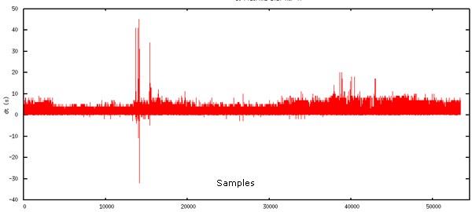
These are the timestamps recorded by the AIS logging system. We should expect lots of time jumps in the positive direction. Negative time means that either packets are getting to me out of order or that there is a serious timing problem with the USCG system. Here is the definition of the timestamp that the USCG RDC gave me:
The last field is a time tag based on the standard “C” programming language time function. Both date and time to the nearest second can be derived from this field. This field is always provided, regardless of the type of AIS equipment.The positive jumps look fine at first glance, but those negative time steps are very suspicious.
I pulled my recorded data from that period and created the same graph of time. This is time taken from the system clock with python's time.time() and the system is running NTP to adjust the clock. I would not expect any radical changes and I would be surprised to see time step backwards.
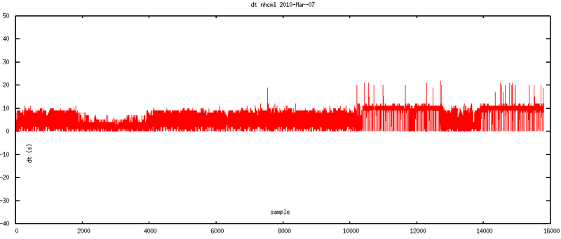
That graph looks pretty much like what I would expect. There are gaps of up to 10 to 20 seconds without receiving messages.
The above two plots are in sample space, so the x-axes are not comparable. Here are the two plots together with a common time base. It's a little hard to compare on top of each other and there are more messages being received by the USCG.
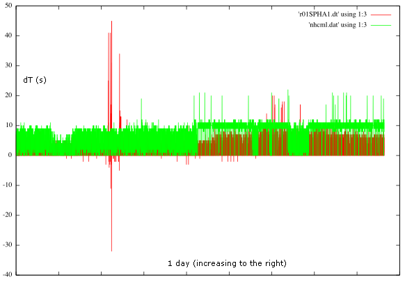
I wrote some code to help me find and identify that big -32 time jump in the USCG data and where it lines up in my data. First the USCG data: The blank line is where the time jump back occurs. I've put the critical timestamps in bold. The USCG only saves whole seconds in the timestamp field.
!AIVDM,1,1,,B,15NANh0P01Jt;lrHaRa`ggvd08=f,0*49,d-057,S0840,t061222.00,T22.4152978,r01SPHA1,1267942343 !AIVDM,1,1,,B,15Ol;:0003rtJ1hH`CcU4b4h0`>w,0*5B,d-050,S0921,t061224.00,T24.57676847,r01SPHA1,1267942345 !AIVDM,1,1,,A,15NANh0P01Jt;lpHaRa`WOw000Rm,0*69,d-058,S1237,t061233.00,T33.00194003,r01SPHA1,1267942354 !AIVDM,1,1,,A,15Ol;:0001rtJ1fH`CcP?b760l07,0*45,d-052,S1321,t061235.00,T35.24343642,r01SPHA1,1267942356 !AIVDM,1,1,,B,15NANh0P01Jt;ljHaRa`M?wD0@Ib,0*0A,d-057,S1604,t061242.00,T42.78861662,r01SPHA1,1267942365 !AIVDM,1,1,,B,15Ol;:0001rtJ1bH`Cd0:J7J0l07,0*74,d-050,S1710,t061245.00,T45.61679435,r01SPHA1,1267942369 !AIVDM,1,1,,A,15NANh0P01Jt;lhHaRaGUgwb00S7,0*75,d-058,S2001,t061253.00,T53.375324,r01SPHA1,1267942376 !AIVDM,1,1,,A,15Ol;:0003rtJ1VH`CcsgJ9f0PS>,0*2C,d-051,S2083,t061255.00,T55.56348727,r01SPHA1,1267942378 !AIVDM,1,1,,B,15NANh0P01Jt;lfHaRaG;Ov60@30,0*7C,d-057,S0154,t061304.00,T04.12196564,r01SPHA1,1267942433 !AIVDM,1,1,,B,15Ol;:0004rtJ1dH`Cd4Bb8:0PSg,0*53,d-050,S0196,t061305.00,T05.24352761,r01SPHA1,1267942433 !AIVDM,1,1,,A,15NANh0P01Jt;lRHaRaGj?wb0HOl,0*17,d-058,S1998,t061353.00,T53.29528526,r01SPHA1,1267942401 !AIVDM,1,1,,B,35NIaa5P00Jt;ThHaVQ;>OwfR000,0*6F,d-057,S2009,t061353.00,T53.58859138,r01SPHA1,1267942401 !AIVDM,1,1,,A,15Ol;:000;rtJ1NH`CcRUJ?f0hQ=,0*10,d-052,S2087,t061355.00,T55.67004935,r01SPHA1,1267942401 !AIVDM,1,1,,B,15NANh0P01Jt;lRHaRa87wv60<07,0*7B,d-057,S0154,t061404.00,T04.12197866,r01SPHA1,1267942411 !AIVDM,1,1,,B,15Ol;:0000rtJ1TH`CcU`r><0h4?,0*34,d-051,S0233,t061406.00,T06.23016829,r01SPHA1,1267942414 !AIVDM,1,1,,A,15NANh0P01Jt;lVHaR`ofgvH00S`,0*2D,d-059,S0495,t061413.00,T13.2152986,r01SPHA1,1267942425 !AIVDM,1,1,,A,15Ol;:0009rtJ1@H`Cbpm:>P0T00,0*10,d-054,S0598,t061415.00,T15.96339453,r01SPHA1,1267942456 !AIVDM,1,1,,B,15NANh0P01Jt;lVHaR`Wmgvd00Sm,0*3C,d-057,S0840,t061422.00,T22.41528473,r01SPHA1,1267942458 !AIVDM,1,1,,B,15Ol;:000=rtJ1JH`Cc2?J@h0PSD,0*29,d-053,S0921,t061424.00,T24.57676847,r01SPHA1,1267942460 !AIVDM,1,1,,A,15NANh0P01Jt;lbHaRWofww00D08,0*08,d-059,S1216,t061432.00,T32.44195134,r01SPHA1,1267942469It's not so much fun to stare at AIS NMEA, but I have identified the same sentences in my logged code. Note that I only save time to hundredths of a second. I have highlighted the timestamps on the lines that correspond to the lines in the USCG log on either side of time jump. In my log, I found that I had 8 senteces that the USCG did not have.
!AIVDM,1,1,,B,15NANh0P01Jt;lrHaRa`ggvd08=f,0*49,rnhcml,1267942343.42 !AIVDM,1,1,,B,15Ol;:0003rtJ1hH`CcU4b4h0`>w,0*5B,rnhcml,1267942345.58 !AIVDM,1,1,,A,15NANh0P01Jt;lpHaRa`WOw000Rm,0*69,rnhcml,1267942354.0 !AIVDM,1,1,,A,15Ol;:0001rtJ1fH`CcP?b760l07,0*45,rnhcml,1267942356.24 !AIVDM,1,1,,B,15NANh0P01Jt;ljHaRa`M?wD0@Ib,0*0A,rnhcml,1267942363.79 !AIVDM,1,1,,B,15Ol;:0001rtJ1bH`Cd0:J7J0l07,0*74,rnhcml,1267942366.62 !AIVDM,1,1,,A,15NANh0P01Jt;lhHaRaGUgwb00S7,0*75,rnhcml,1267942374.38 !AIVDM,1,1,,A,15Ol;:0003rtJ1VH`CcsgJ9f0PS>,0*2C,rnhcml,1267942376.56 !AIVDM,1,1,,B,15NANh0P01Jt;lfHaRaG;Ov60@30,0*7C,rnhcml,1267942385.12 !AIVDM,1,1,,B,15Ol;:0004rtJ1dH`Cd4Bb8:0PSg,0*53,rnhcml,1267942386.24 !AIVDM,1,1,,A,15NANh0P01Jt;lbHaRaGcwvH04hl,0*16,rnhcml,1267942394.22 !AIVDM,1,1,,A,15Ol;:0008rtJ1NH`Cc`h::P0`9t,0*76,rnhcml,1267942396.96 !AIVDM,1,1,,B,15NANh0P01Jt;lPHaRaogwvd04hl,0*27,rnhcml,1267942403.42 !AIVDM,1,1,,B,15Ol;:0007rtJ1LH`CcHDb:h0T00,0*65,rnhcml,1267942405.58 !AIVDM,1,1,,A,15NANh0P01Jt;lLHaRb7tOw00HCV,0*70,rnhcml,1267942413.44 !AIVDM,1,1,,A,15Ol;:0004rtJ1dH`CdSp:;60hE?,0*24,rnhcml,1267942416.24 !AIVDM,1,1,,B,15NANh0P01Jt;lLHaRb7twwD0<08,0*56,rnhcml,1267942423.79 !AIVDM,1,1,,B,15Ol;:000=rtJ1DH`Cc98:=J0hKD,0*24,rnhcml,1267942426.62 !AIVDM,1,1,,A,15NANh0P01Jt;lRHaRaGj?wb0HOl,0*17,rnhcml,1267942434.3 !AIVDM,1,1,,B,35NIaa5P00Jt;ThHaVQ;>OwfR000,0*6F,rnhcml,1267942434.59 !AIVDM,1,1,,A,15Ol;:000;rtJ1NH`CcRUJ?f0hQ=,0*10,rnhcml,1267942436.67 !AIVDM,1,1,,B,15NANh0P01Jt;lRHaRa87wv60<07,0*7B,rnhcml,1267942445.12 !AIVDM,1,1,,B,15Ol;:0000rtJ1TH`CcU`r><0h4?,0*34,rnhcml,1267942447.23 !AIVDM,1,1,,A,15NANh0P01Jt;lVHaR`ofgvH00S`,0*2D,rnhcml,1267942454.22 !AIVDM,1,1,,A,15Ol;:0009rtJ1@H`Cbpm:>P0T00,0*10,rnhcml,1267942456.96 !AIVDM,1,1,,B,15NANh0P01Jt;lVHaR`Wmgvd00Sm,0*3C,rnhcml,1267942463.42 !AIVDM,1,1,,B,15Ol;:000=rtJ1JH`Cc2?J@h0PSD,0*29,rnhcml,1267942465.58 !AIVDM,1,1,,A,15NANh0P01Jt;lbHaRWofww00D08,0*08,rnhcml,1267942473.44As I did before, I ran my ais_nmea_uscg_timeshift.py script on both the USCG and my logs. Here is the USCG table. dT is the change in T between sequential messages. dt cg s and dT should be close except for wrapping issues. t is the hhmmss metadata flag. The Slot is reported by the S field and I use that to calculate the time within minute for that slot. If the message commstate contains the slot that the transmitter thinks it was using, I include that time as "msg slot t". This will be seconds within the minute. If the commstate contains hours and minutes, I include those in "msg hour" and "msg min". The "msg sec" comes from the TimeStamp field in all position reports.
| USCG datetime | cg_s | dt cg s | T | dT | t | S | slot t | msg slot num | msg slot t | msg hour | msg min | msg sec | MMSI |
| 2010-03-07 06:12:23 | 1267942343 | N/A | 22.4152978 | N/A | 061222.00 | 840 | 22.40 | 878 | 23.4133333333 | N/A | N/A | 22 | 367288000 |
| 2010-03-07 06:12:25 | 1267942345 | 2 | 24.57676847 | 2.1615 | 061224.00 | 921 | 24.56 | 959 | 25.5733333333 | N/A | N/A | 24 | 368905000 |
| 2010-03-07 06:12:34 | 1267942354 | 9 | 33.00194003 | 8.4252 | 061233.00 | 1237 | 32.99 | N/A | N/A | N/A | N/A | 32 | 367288000 |
| 2010-03-07 06:12:36 | 1267942356 | 2 | 35.24343642 | 2.2415 | 061235.00 | 1321 | 35.23 | N/A | N/A | N/A | N/A | 35 | 368905000 |
| 2010-03-07 06:12:45 | 1267942365 | 9 | 42.78861662 | 7.5452 | 061242.00 | 1604 | 42.77 | 1642 | 43.7866666667 | N/A | N/A | 42 | 367288000 |
| 2010-03-07 06:12:49 | 1267942369 | 4 | 45.61679435 | 2.8282 | 061245.00 | 1710 | 45.60 | N/A | N/A | N/A | N/A | 45 | 368905000 |
| 2010-03-07 06:12:56 | 1267942376 | 7 | 53.375324 | 7.7585 | 061253.00 | 2001 | 53.36 | N/A | N/A | N/A | N/A | 53 | 367288000 |
| 2010-03-07 06:12:58 | 1267942378 | 2 | 55.56348727 | 2.1882 | 061255.00 | 2083 | 55.55 | N/A | N/A | N/A | N/A | 55 | 368905000 |
| 2010-03-07 06:13:53 | 1267942433 | 55 | 4.12196564 | -51.4415 | 061304.00 | 154 | 4.11 | 192 | 5.12 | N/A | N/A | 3 | 367288000 |
| 2010-03-07 06:13:53 | 1267942433 | 0 | 5.24352761 | 1.1216 | 061305.00 | 196 | 5.23 | N/A | N/A | N/A | N/A | 5 | 368905000 |
| jump & missing data | |||||||||||||
| 2010-03-07 06:13:21 | 1267942401 | -32 | 53.29528526 | 48.0518 | 061353.00 | 1998 | 53.28 | 2036 | 54.2933333333 | N/A | N/A | 53 | 367288000 |
| 2010-03-07 06:13:21 | 1267942401 | 0 | 53.58859138 | 0.2933 | 061353.00 | 2009 | 53.57 | N/A | N/A | N/A | N/A | 55 | 367421860 |
| 2010-03-07 06:13:21 | 1267942401 | 0 | 55.67004935 | 2.0815 | 061355.00 | 2087 | 55.65 | 2125 | 56.6666666667 | N/A | N/A | 55 | 368905000 |
| 2010-03-07 06:13:31 | 1267942411 | 10 | 4.12197866 | -51.5481 | 061404.00 | 154 | 4.11 | N/A | N/A | N/A | N/A | 3 | 367288000 |
| 2010-03-07 06:13:34 | 1267942414 | 3 | 6.23016829 | 2.1082 | 061406.00 | 233 | 6.21 | 271 | 7.22666666667 | N/A | N/A | 6 | 368905000 |
| 2010-03-07 06:13:45 | 1267942425 | 11 | 13.2152986 | 6.9851 | 061413.00 | 495 | 13.20 | N/A | N/A | N/A | N/A | 12 | 367288000 |
| 2010-03-07 06:14:16 | 1267942456 | 31 | 15.96339453 | 2.7481 | 061415.00 | 598 | 15.95 | N/A | N/A | 0 | 0 | 16 | 368905000 |
| 2010-03-07 06:14:18 | 1267942458 | 2 | 22.41528473 | 6.4519 | 061422.00 | 840 | 22.40 | N/A | N/A | N/A | N/A | 22 | 367288000 |
| 2010-03-07 06:14:20 | 1267942460 | 2 | 24.57676847 | 2.1615 | 061424.00 | 921 | 24.56 | N/A | N/A | N/A | N/A | 24 | 368905000 |
| 2010-03-07 06:14:29 | 1267942469 | 9 | 32.44195134 | 7.8652 | 061432.00 | 1216 | 32.43 | N/A | N/A | N/A | N/A | 32 | 367288000 |
So that shows in great detail, that we have one time jump back. I passed my logs through the same code and (with the help of emacs org-mode) modified the table to also show the USCG times for the packets that occur in both streams. This is the table that really tells the story of what I think is going on. The "NTP vs USCG" column is the most critical. This is the seconds between the sense of time in each feed.
| NTP datetime | NTP Unix UTC s | r01PSHA1 uscg t | NTP vs USCG | dt NTP (s) | msg slot num | msg slot t | msg hour | msg min | msg sec | MMSI | |
| 2010-03-07 06:12:23.42 | 1267942343.42 | 1267942343 | 0.42 | N/A | 878 | 23.4133333333 | N/A | N/A | 22 | 367288000 | |
| 2010-03-07 06:12:25.58 | 1267942345.58 | 1267942345 | 0.58 | 2 | 959 | 25.5733333333 | N/A | N/A | 24 | 368905000 | |
| 2010-03-07 06:12:34.00 | 1267942354.00 | 1267942354 | 0. | 8 | N/A | N/A | N/A | N/A | 32 | 367288000 | |
| 2010-03-07 06:12:36.24 | 1267942356.24 | 1267942356 | 0.24 | 2 | N/A | N/A | N/A | N/A | 35 | 368905000 | |
| 2010-03-07 06:12:43.79 | 1267942363.79 | 1267942365 | -1.21 | 7 | 1642 | 43.7866666667 | N/A | N/A | 42 | 367288000 | |
| 2010-03-07 06:12:46.62 | 1267942366.62 | 1267942369 | -2.38 | 2 | N/A | N/A | N/A | N/A | 45 | 368905000 | |
| 2010-03-07 06:12:54.38 | 1267942374.38 | 1267942376 | -1.62 | 7 | N/A | N/A | N/A | N/A | 53 | 367288000 | |
| 2010-03-07 06:12:56.56 | 1267942376.56 | 1267942378 | -1.44 | 2 | N/A | N/A | N/A | N/A | 55 | 368905000 | |
| 2010-03-07 06:13:05.12 | 1267942385.12 | 1267942433 | -47.88 | 8 | 192 | 5.12 | N/A | N/A | 3 | 367288000 | USCG lost time? |
| 2010-03-07 06:13:06.24 | 1267942386.24 | 1267942433 | -46.76 | 1 | N/A | N/A | N/A | N/A | 5 | 368905000 | |
| Start of block missing | from USCG | ||||||||||
| 2010-03-07 06:13:14.22 | 1267942394.22 | 7 | N/A | N/A | 6 | 13 | 12 | 367288000 | |||
| 2010-03-07 06:13:16.96 | 1267942396.96 | USCG | 2 | 636 | 16.96 | N/A | N/A | 16 | 368905000 | ||
| 2010-03-07 06:13:23.42 | 1267942403.42 | missing | 6 | N/A | N/A | 6 | 13 | 22 | 367288000 | ||
| 2010-03-07 06:13:25.58 | 1267942405.58 | packets | 2 | N/A | N/A | 0 | 0 | 24 | 368905000 | ship with bad time? | |
| 2010-03-07 06:13:33.44 | 1267942413.44 | 7 | 1254 | 33.44 | N/A | N/A | 32 | 367288000 | |||
| 2010-03-07 06:13:36.24 | 1267942416.24 | 2 | 1359 | 36.24 | N/A | N/A | 35 | 368905000 | |||
| 2010-03-07 06:13:43.79 | 1267942423.79 | 7 | N/A | N/A | N/A | N/A | 42 | 367288000 | |||
| 2010-03-07 06:13:46.62 | 1267942426.62 | 2 | 1748 | 46.6133333333 | N/A | N/A | 45 | 368905000 | |||
| Where the USCG jumps back | |||||||||||
| 2010-03-07 06:13:54.30 | 1267942434.30 | 1267942401 | 33.3 | 7 | 2036 | 54.2933333333 | N/A | N/A | 53 | 367288000 | |
| 2010-03-07 06:13:54.59 | 1267942434.59 | 1267942401 | 33.59 | 0 | N/A | N/A | N/A | N/A | 55 | 367421860 | |
| 2010-03-07 06:13:56.67 | 1267942436.67 | 1267942401 | 35.67 | 2 | 2125 | 56.6666666667 | N/A | N/A | 55 | 368905000 | |
| 2010-03-07 06:14:05.12 | 1267942445.12 | 1267942411 | 34.12 | 8 | N/A | N/A | N/A | N/A | 3 | 367288000 | |
| 2010-03-07 06:14:07.23 | 1267942447.23 | 1267942414 | 33.23 | 2 | 271 | 7.22666666667 | N/A | N/A | 6 | 368905000 | |
| 2010-03-07 06:14:14.22 | 1267942454.22 | 1267942425 | 29.22 | 6 | N/A | N/A | N/A | N/A | 12 | 367288000 | |
| 2010-03-07 06:14:16.96 | 1267942456.96 | 1267942456 | 0.96 | 2 | N/A | N/A | 0 | 0 | 16 | 368905000 | USCG finds time? |
| 2010-03-07 06:14:23.42 | 1267942463.42 | 1267942458 | 5.42 | 6 | N/A | N/A | N/A | N/A | 22 | 367288000 | |
| 2010-03-07 06:14:25.58 | 1267942465.58 | 1267942460 | 5.58 | 2 | N/A | N/A | N/A | N/A | 24 | 368905000 | |
| 2010-03-07 06:14:33.44 | 1267942473.44 | 1267942469 | 4.44 | 7 | N/A | N/A | N/A | N/A | 32 | 367288000 |
I also realize that I need to add periodic NTP checks to my serial_logger python program and to put them in my log stream. Looking at my copy of NMEA 4.0, I see that there is not message to report how well NTP is doing. Time to make up a string.
04.01.2010 09:18
Does NTP help N-AIS? Maybe, but it can't hurt
When doing analysis with multiple stations in the N-AIS network, I
have been plagued by timestamps that do not make a lot of sense. Last
year, I found quite a bit of offset between timestamps being done
in Java for two basestations in Boston. I didn't totally understand
the explanation from the USCG about how timekeeping is done with the
NAIS logging code. To try to account for this kind of trouble, I
worked with the SBNMS to put all of their AIS receiving stations on
NTP. This should keep the system clock very close to GPS time. I had
hoped that this would keep time between the 3 receiving stations much
less than a second apart. Initial checking of the NTP logs showed
that things were great. However, when looking at the logs from
Scituate, MA, I am still seeing negative time jumps that I do not
believe I should ever see with NTP running. NTP should be slewing the
clock ticks, not jumping.
This blog post evolved over some amount of time and I haven't finished thinking about the topic, so I appologize if it is a bit scattered.
Here is my initial work on analysing time to see if things are better with NTP. I am using 2010-Mar-26. aisinfo is supposed to give you an analysis of downtime in a receiver as best it can by looking at holes in receive time (assuming there are always vessels in the area). My assumption was that time would now only go forward. Jumping back 43 seconds in time is a really big problem. If this were a network file system, 43 seconds back in time could cause major issues and in detailed analysis, this means that time keeping is no better than a minute.
This message traffic is what I received at CCOM on 2010-Mar-26. The data is being sent compressed using a TCP/IP socket, meaning that while there is a connection, the data will be reliably delivered from N-AIS to CCOM, but if the connection is down for a period, I will not receive back data. I also do not know how queuing is handled on the USCG side.
Here is the kind of thing that triggered me to dig into this more. I had assumed that all data is being delivered to me in the order that is was received at each station. I am okay with station interleaving (if they all ran NTP and have the same sense of time to a sub-second level). ais_info is code that is still in progress.
Here is a graph of 5 stations in the Boston area, plus one station from San Francisco. You can see that all of the stations show a jump back in time and it looks like they might be repeating the packets from a time period.
One thing that I am super concerned about is that stations have the same sense of time. The next two plots are from opendiff on the Mac. I can see that messages arriving at the two stations being compared have the same timestamps.
Now it is time to dig into the a look at time on the "13" basestation in Boston. I have removed a lot of extra messages to focus in on the trouble spots. Ships' time and the USCG timestamp appear to be similar on both sides of these gaps.
It really looks like the USCG time is following the majority of the messages on the network within about 5 seconds. It is a bit harder to see with basestations in N-AIS as they do not have as much metadata as the ShineMicro receivers. I started realizing that these time jumps are repeated network traffic coming through N-AIS. You can see 2 messages in this example that I have received 2 times.
There is a lot more analysis that I could do. I will likely be comparing a station with my own logging code to an N-AIS station run by the USCG.
This blog post evolved over some amount of time and I haven't finished thinking about the topic, so I appologize if it is a bit scattered.
Here is my initial work on analysing time to see if things are better with NTP. I am using 2010-Mar-26. aisinfo is supposed to give you an analysis of downtime in a receiver as best it can by looking at holes in receive time (assuming there are always vessels in the area). My assumption was that time would now only go forward. Jumping back 43 seconds in time is a really big problem. If this were a network file system, 43 seconds back in time could cause major issues and in detailed analysis, this means that time keeping is no better than a minute.
This message traffic is what I received at CCOM on 2010-Mar-26. The data is being sent compressed using a TCP/IP socket, meaning that while there is a connection, the data will be reliably delivered from N-AIS to CCOM, but if the connection is down for a period, I will not receive back data. I also do not know how queuing is handled on the USCG side.
Here is the kind of thing that triggered me to dig into this more. I had assumed that all data is being delivered to me in the order that is was received at each station. I am okay with station interleaving (if they all ran NTP and have the same sense of time to a sub-second level). ais_info is code that is still in progress.
ais_info.py b003669713 WARNING: Non-monotonic timestamp 1269564602.0 > 1269564600.0 -2.0 WARNING: Non-monotonic timestamp 1269567199.0 > 1269567137.0 -62.0 gap>30: 1269567240.0 WARNING: Non-monotonic timestamp 1269579786.0 > 1269579781.0 -5.0 WARNING: Non-monotonic timestamp 1269579845.0 > 1269579841.0 -4.0 WARNING: Non-monotonic timestamp 1269579906.0 > 1269579900.0 -6.0 WARNING: Non-monotonic timestamp 1269579962.0 > 1269579960.0 -2.0 WARNING: Non-monotonic timestamp 1269580023.0 > 1269580021.0 -2.0 WARNING: Non-monotonic timestamp 1269580145.0 > 1269580140.0 -5.0 WARNING: Non-monotonic timestamp 1269580203.0 > 1269580200.0 -3.0 WARNING: Non-monotonic timestamp 1269580382.0 > 1269580380.0 -2.0 WARNING: Non-monotonic timestamp 1269580741.0 > 1269580740.0 -1.0 WARNING: Non-monotonic timestamp 1269588182.0 > 1269588181.0 -1.0 WARNING: Non-monotonic timestamp 1269592262.0 > 1269592260.0 -2.0 WARNING: Non-monotonic timestamp 1269596401.0 > 1269596400.0 -1.0 WARNING: Non-monotonic timestamp 1269600482.0 > 1269600481.0 -1.0 WARNING: Non-monotonic timestamp 1269604563.0 > 1269604561.0 -2.0 gap>30: 1269605749.0 gap>30: 1269606142.0 WARNING: Non-monotonic timestamp 1269606157.0 > 1269605703.0 -454.0 WARNING: Non-monotonic timestamp 1269608521.0 > 1269608520.0 -1.0 WARNING: Non-monotonic timestamp 1269621302.0 > 1269621300.0 -2.0 ...I was actually looking at this SBNMS station and worrying that installing NTP has not helped things. It's possible that it has, but I am still not sure.
ais_info.py r003669945 WARNING: Non-monotonic timestamp 1269606154.0 > 1269606111.0 -43.0 time_range: 1269561599.0 1269647999.0 (UNIX UTC seconds) time_length: 86400.0 total_gap_time: 372.0 (s)Here is the raw NMEA stream around that time jump:
!AIVDM,1,1,,B,35N1c70PBHJteLdHBBEaRp920000,0*54,d-104,S1196,t122231.00,T31.89694949,r003669945,1269606151 !AIVDM,1,1,,B,15NJB70000Jri4vH@3=qJFu00<0E,0*04,d-103,S1197,t122231.00,T31.92369417,r003669945,1269606152 !AIVDM,1,1,,B,15N?aT0P01JrhMhH?TonO?vv00Rs,0*02,d-100,S1216,t122232.00,T32.43034979,r003669945,1269606152 !AIVDM,1,1,,A,352HnkwOhFJtl?JHBVK6gqq20000,0*1A,d-098,S1223,t122232.00,T32.61702873,r003669945,1269606152 !AIVDM,1,1,,A,15Mwkv0P?w<tSF0l4Q@>4?wp1pC?,0*06,d-097,S1231,t122232.00,T32.83033517,r003669945,1269606152 !AIVDM,1,1,,A,15N1doPP01JrmvfH?GUrEgw40<0E,0*1D,d-106,S1248,t122233.00,T33.28360559,r003669945,1269606153 !AIVDM,1,1,,A,152Hk2dP0TJrqP<H@D0`Jww400Rm,0*29,d-107,S1252,t122233.00,T33.39019371,r003669945,1269606153 !AIVDM,1,1,,B,35N8w`0OifJsjKLHCHcWvVO20000,0*4C,d-101,S1274,t122233.00,T33.97700125,r003669945,1269606154 !AIVDM,1,1,,B,352HnkwOhFJtl?LHBVGVlqw601>@,0*05,d-101,S1297,t122234.00,T34.59036217,r003669945,1269606154 * jump here * !AIVDM,1,1,,B,352HiUg00vJrpWlH@>daB7IV0000,0*5E,d-105,S1938,t122151.00,T51.68379934,r003669945,I wrote a little program to examine the time signals in this blog of messages. It looks at the metadata fields 't', 'T', and the trailing timestamp. You can see that all three of these move together. I use the slot number (2250 slots per frame) to generate a time within a frame (1 minute per frame).1269606111 !AIVDM,1,1,,B,35N1c70OjNJtfOTHBDmb;pSb00d0,0*7F,d-104,S1946,t122151.00,T51.89697553,r003669945,1269606111 !AIVDM,1,1,,A,152Hk2dP0bJrqd0H@EO8SOwb0HNW,0*28,d-105,S1959,t122152.00,T52.24352763,r003669945,1269606112 !AIVDM,1,1,,B,15NJB70000Jri50H@3@LaVub0@Nm,0*40,d-101,S1973,t122152.00,T52.61704175,r003669945,1269606112 !AIVDM,1,1,,A,15N1doPP01JrmvdH?GUJuwwd0@OF,0*57,d-108,S2006,t122153.00,T53.49700317,r003669945,1269606113 !AIVDM,1,1,,A,35N1c70OjNJtfMdHBDk:;ped00Wi,0*4A,d-102,S2007,t122153.00,T53.52351349,r003669945,1269606113 !AIVDM,1,1,,B,35N8w`001fJsjh2HCM2GwnMb0000,0*19,d-102,S2020,t122153.00,T53.87033501,r003669945,1269606113 !AIVDM,1,1,,A,15Mwkv0P?w<tSF0l4Q@>4?wp1T00,0*5E,d-099,S2033,t122154.00,T54.21705637,r003669945,1269606114 !AIVDM,1,1,,B,352HnkwP@=Jtl>BHBW97Ep9f0180,0*18,d-096,S2063,t122155.00,T55.01703113,r003669945,1269606115
| USCG datetime | cg s | dt cg s | T | dT | t | S | slot t | msg slot num | msg slot t | msg hour | msg min | msg sec | MMSI |
| 2010-03-26 12:22:30 | 1269606150 | 0 | 30.13667911 | 0.0264 | 122230.00 | 1130 | 30.13 | 1130 | 30.1333333333 | 12 | 22 | 29 | b3669713 |
| 2010-03-26 12:22:30 | 1269606150 | 0 | 30.26924368 | 0.1326 | 122230.00 | 1135 | 30.27 | N/A | N/A | 12 | 22 | 29 | b3669971 |
| 2010-03-26 12:22:31 | 1269606151 | 1 | 31.8437987 | 1.3603 | 122231.00 | 1194 | 31.84 | N/A | N/A | N/A | N/A | 32 | 338047382 |
| 2010-03-26 12:22:32 | 1269606152 | 1 | 31.92369417 | 0.0267 | 122231.00 | 1197 | 31.92 | N/A | N/A | N/A | N/A | 32 | 367432220 |
| 2010-03-26 12:22:33 | 1269606153 | 1 | 33.28360559 | 0.4533 | 122233.00 | 1248 | 33.28 | N/A | N/A | N/A | N/A | 34 | 367029470 |
| 2010-03-26 12:22:34 | 1269606154 | 1 | 33.97700125 | 0.5868 | 122233.00 | 1274 | 33.97 | N/A | N/A | N/A | N/A | 33 | 367148960 |
| 2010-03-26 12:22:34 | 1269606154 | 0 | 34.59036217 | 0.6134 | 122234.00 | 1297 | 34.59 | N/A | N/A | N/A | N/A | 35 | 338048719 |
| Jump back | |||||||||||||
| 2010-03-26 12:21:51 | 1269606111 | -43 | 51.68379934 | 17.0934 | 122151.00 | 1938 | 51.68 | N/A | N/A | N/A | N/A | 51 | 338047382 |
| 2010-03-26 12:21:52 | 1269606112 | 1 | 52.24352763 | 0.3466 | 122152.00 | 1959 | 52.24 | 1959 | 52.24 | N/A | N/A | 53 | 338047754 |
| 2010-03-26 12:21:52 | 1269606112 | 0 | 52.61704175 | 0.3735 | 122152.00 | 1973 | 52.61 | 1973 | 52.6133333333 | N/A | N/A | 53 | 367432220 |
| 2010-03-26 12:21:53 | 1269606113 | 1 | 53.49700317 | 0.8800 | 122153.00 | 2006 | 53.49 | 2006 | 53.4933333333 | N/A | N/A | 54 | 367029470 |
| 2010-03-26 12:22:00 | 1269606120 | 0 | 0.13713486 | 0.1067 | 122200.00 | 5 | 0.13 | 5 | 0.133333333333 | 12 | 21 | 59 | b3669713 |
| 2010-03-26 12:22:01 | 1269606121 | 0 | 1.41696443 | 0.2399 | 122201.00 | 53 | 1.41 | 53 | 1.41333333333 | N/A | N/A | 2 | 366891140 |
Here is a graph of 5 stations in the Boston area, plus one station from San Francisco. You can see that all of the stations show a jump back in time and it looks like they might be repeating the packets from a time period.
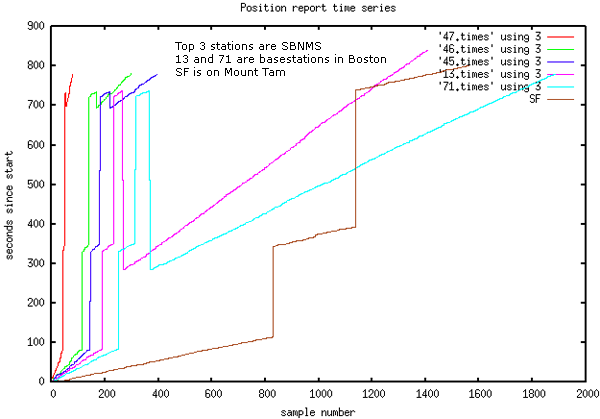
One thing that I am super concerned about is that stations have the same sense of time. The next two plots are from opendiff on the Mac. I can see that messages arriving at the two stations being compared have the same timestamps.
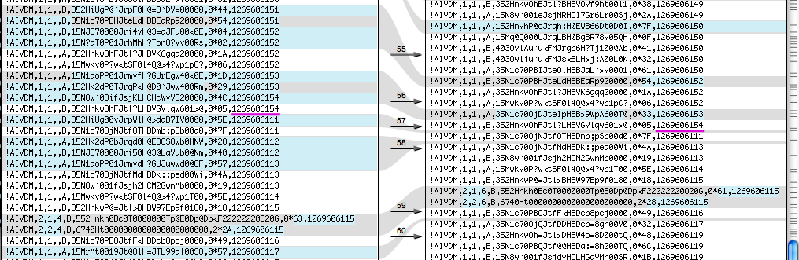
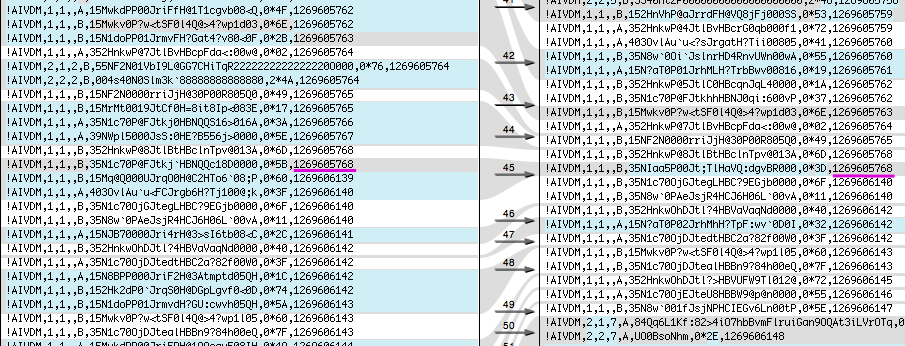
Now it is time to dig into the a look at time on the "13" basestation in Boston. I have removed a lot of extra messages to focus in on the trouble spots. Ships' time and the USCG timestamp appear to be similar on both sides of these gaps.
| USCG datetime | cg s | dt cg s | msg slot num | msg slot t | msg hour | msg min | msg sec | MMSI | |
| 2010-03-26 12:11:32 | 1269605492 | N/A | N/A | N/A | 12 | 11 | 29 | b3669971 | |
| 2010-03-26 12:11:34 | 1269605494 | 0 | 1209 | 32.24 | N/A | N/A | 33 | 338047754 | |
| 2010-03-26 12:11:35 | 1269605495 | 0 | 1257 | 33.52 | N/A | N/A | 32 | 367078250 | |
| 2010-03-26 12:11:36 | 1269605496 | 1 | 1270 | 33.8666666667 | N/A | N/A | 34 | 366666180 | |
| 2010-03-26 12:11:36 | 1269605496 | 0 | 1285 | 34.2666666667 | N/A | N/A | 35 | 367029470 | |
| 2010-03-26 12:11:41 | 1269605501 | 1 | N/A | N/A | 12 | 11 | 40 | 338048667 | |
| jump forward | Network down? | ||||||||
| 2010-03-26 12:15:49 | 1269605749 | 248 | N/A | N/A | 12 | 15 | 47 | 366910960 | |
| 2010-03-26 12:15:49 | 1269605749 | 0 | 1763 | 47.0133333333 | N/A | N/A | 47 | 366516390 | |
| 2010-03-26 12:15:51 | 1269605751 | 2 | 1833 | 48.88 | N/A | N/A | 49 | 338047382 | |
| 2010-03-26 12:15:52 | 1269605752 | 0 | N/A | N/A | 12 | 15 | 49 | b3669971 | |
| 2010-03-26 12:16:04 | 1269605764 | 12 | N/A | N/A | 12 | 16 | 1 | 367137410 | |
| 2010-03-26 12:16:04 | 1269605764 | 0 | 70 | 1.86666666667 | N/A | N/A | 0 | 367258000 | |
| 2010-03-26 12:16:05 | 1269605765 | 1 | 801 | 21.36 | N/A | N/A | 21 | 366998450 | Vessel with bad time |
| 2010-03-26 12:16:06 | 1269605766 | 1 | N/A | N/A | 12 | 16 | 3 | 366666180 | |
| 2010-03-26 12:16:08 | 1269605768 | 2 | N/A | N/A | 12 | 16 | 4 | 367362680 | |
| 2010-03-26 12:16:08 | 1269605768 | 0 | 228 | 6.08 | N/A | N/A | 6 | 366516390 | |
| 2010-03-26 12:16:10 | 1269605770 | 2 | 291 | 7.76 | N/A | N/A | 8 | 123456789 | |
| 2010-03-26 12:16:11 | 1269605771 | 1 | N/A | N/A | N/A | N/A | 9 | 338047382 | |
| jump forward | Network down? | ||||||||
| 2010-03-26 12:22:22 | 1269606142 | 371 | N/A | N/A | 12 | 22 | 20 | 338048667 | |
| 2010-03-26 12:22:23 | 1269606143 | 1 | 787 | 20.9866666667 | N/A | N/A | 21 | 367432220 | |
| 2010-03-26 12:22:25 | 1269606145 | 0 | 836 | 22.2933333333 | N/A | N/A | 20 | 367078250 | |
| 2010-03-26 12:22:25 | 1269606145 | 0 | N/A | N/A | 12 | 22 | 22 | 367137410 | |
| 2010-03-26 12:22:25 | 1269606145 | 0 | N/A | N/A | 12 | 22 | 24 | 367029470 | |
| 2010-03-26 12:22:27 | 1269606147 | 2 | 1624 | 43.3066666667 | N/A | N/A | 43 | 366998450 | |
| 2010-03-26 12:22:33 | 1269606153 | 0 | N/A | N/A | 12 | 22 | 29 | b3669971 | |
| 2010-03-26 12:22:33 | 1269606153 | 0 | N/A | N/A | 12 | 22 | 30 | 367137410 | |
| 2010-03-26 12:22:35 | 1269606155 | 0 | 1233 | 32.88 | N/A | N/A | 31 | 367078250 | |
| 2010-03-26 12:22:36 | 1269606156 | 0 | N/A | N/A | N/A | N/A | 34 | 367029470 | |
| 2010-03-26 12:22:36 | 1269606156 | 0 | N/A | N/A | N/A | N/A | 34 | 338047754 | |
| 2010-03-26 12:22:36 | 1269606156 | 0 | N/A | N/A | N/A | N/A | 33 | 366666180 | |
| 2010-03-26 12:22:37 | 1269606157 | 1 | 1339 | 35.7066666667 | N/A | N/A | 33 | 367362680 | |
| jump back | network repeating? | ||||||||
| 2010-03-26 12:15:03 | 1269605703 | -454 | N/A | N/A | N/A | N/A | 2 | 366891140 | |
| 2010-03-26 12:15:04 | 1269605704 | 1 | 60 | 1.6 | N/A | N/A | 1 | 367137410 | |
| 2010-03-26 12:15:04 | 1269605704 | 0 | 80 | 2.13333333333 | N/A | N/A | 2 | 367432220 | |
| 2010-03-26 12:15:04 | 1269605704 | 0 | N/A | N/A | 12 | 15 | 0 | 367078250 | |
| 2010-03-26 12:15:04 | 1269605704 | 0 | N/A | N/A | N/A | N/A | 21 | 366998450 | |
| 2010-03-26 12:15:05 | 1269605705 | 1 | N/A | N/A | N/A | N/A | 3 | 338048667 | |
| 2010-03-26 12:15:05 | 1269605705 | 0 | 110 | 2.93333333333 | N/A | N/A | 60 | 366998520 | |
| 2010-03-26 12:15:06 | 1269605706 | 1 | 136 | 3.62666666667 | N/A | N/A | 3 | 366666180 | |
| 2010-03-26 12:15:06 | 1269605706 | 0 | N/A | N/A | 12 | 15 | 4 | 338047754 | |
| 2010-03-26 12:15:06 | 1269605706 | 0 | N/A | N/A | N/A | N/A | 5 | 367029470 | |
| 2010-03-26 12:15:08 | 1269605708 | 2 | 248 | 6.61333333333 | N/A | N/A | 4 | 367362680 | |
| 2010-03-26 12:15:11 | 1269605711 | 1 | N/A | N/A | 12 | 15 | 9 | 338047382 | |
| 2010-03-26 12:15:12 | 1269605712 | 1 | 366 | 9.76 | N/A | N/A | 9 | 338047381 | |
| 2010-03-26 12:15:12 | 1269605712 | 0 | N/A | N/A | 12 | 15 | 9 | b3669971 | |
| 2010-03-26 12:15:32 | 1269605732 | 20 | N/A | N/A | 12 | 15 | 29 | b3669971 |
It really looks like the USCG time is following the majority of the messages on the network within about 5 seconds. It is a bit harder to see with basestations in N-AIS as they do not have as much metadata as the ShineMicro receivers. I started realizing that these time jumps are repeated network traffic coming through N-AIS. You can see 2 messages in this example that I have received 2 times.
!AIVDM,1,1,,B,15MvG50000Ju=lnGqf8KgpTp0<03,0*77,d-106,S1058,t122228.00,T28.21716058,r003669947,1269606149 !AIVDM,1,1,,B,403Owliu`u<FMJs<SLH>j:A00L0K,0*32,d-102,S1135,t122230.00,T30.26937388,r003669947,1269606151 !AIVDM,1,1,,A,15MvG50000Ju=nvGqf?KgpSj0HQP,0*02,d-109,S2144,t122157.00,T57.17717376,r003669947,1269606118 !AIVDM,1,1,,A,15MrMt0019Jt@8lH=JTL99ql00S8,0*57,d-111,S2153,t122157.00,T57.41693839,r003669947,1269606118 <snip> !AIVDM,1,1,,B,15MvG50000Ju=lnGqf8KgpTp0<03,0*77,d-106,S1058,t122228.00,T28.21716058,r003669947,1269606149 !AIVDM,1,1,,B,403Owliu`u<FMJs<SLH>j:A00L0K,0*32,d-102,S1135,t122230.00,T30.26937388,r003669947,1269606151 !AIVDM,1,1,,A,15MrMt0019Jt?hFH=LQ<8qo808Dl,0*69,d-111,S1332,t122235.00,T35.52357859,r003669947,1269606156At this point I am still not sure how the USCG timestamp relates to UTC. Going back to those small negative timesteps in the basestation, I need to see if those are repeats.
!AIVDM,1,1,,A,15MRHaP001JrsNLH@VtqDQwh0@Po,0*22,b003669713,1269580740 !AIVDM,1,1,,A,11mg=5@P00Jrn;TH?FsJ??wj20Sd,0*2D,b003669713,1269580741 !AIVDM,1,1,,B,152HiUg000Jrj6tH?gGbNCWl0<0E,0*5A,b003669713,1269580740 !AIVDM,1,1,,B,152HnVh000Jrj3rH?fgWU3Wn0@RR,0*26,b003669713,1269580740 !AIVDM,1,1,,A,15MwkdPP00JriIfH@1i3?gvT00Rs,0*51,b003669713,1269580741 !AIVDM,1,1,,B,15N1c70001JrmvLH?G>`5V620<0B,0*13,b003669713,1269580741 !AIVDM,1,1,,A,15Mwkv0P?wJriFjH@1Q>4?wT0d0D,0*0E,b003669713,1269580741 !AIVDO,1,1,,A,403OvlAu`u5BsJrgbFH?TkQ00<0E,0*48,b003669713,1269580741 !AIVDM,1,1,,A,15N8BPP000JriF4H@3C64`r00D0D,0*5D,b003669713,1269580742I do not see a repeat in there, so this must be something to do with how time slews in the java logging code.
There is a lot more analysis that I could do. I will likely be comparing a station with my own logging code to an N-AIS station run by the USCG.